| つねならぬ話 | |
| 星新一 | |
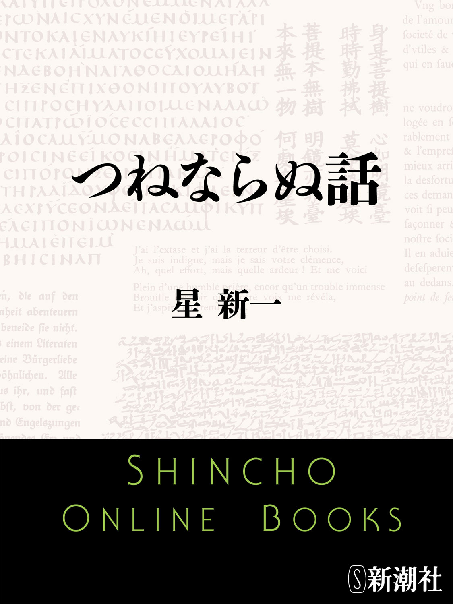
この作品の全部あるいは一部を無断で複製・転載・配信・送信すること、内容を無断で改変・改竄することを禁止します。また、有償・無償にかかわらず第三者に譲渡することはできません。
○新潮社の電子書籍：「Shincho LIVE!（新潮ライブ！）」
○新潮社の書籍：「新潮社ホームページ」
つねならぬ話
星 新一
つねならぬ話
はじまりの物語
風の神話
ぼんやりと、薄暗さだけがただよっていた。動くもの、なにひとつない。無意味な静止のままだった。だから、時も流れない。
どこからともなく風が吹いてきて、天地をわけた。それが、すべてのはじまりである。天は上に、地は下にと存在するようになった。しかし、地上は平坦で、遠くまで、なにひとつない。ただ、風が動いているだけ。
時がたち、風は地面の上のカードと出会った。長方形で、薄いもの。風はそれを吹き上げ、空中を舞わせた。このようなものがあるからには、どこかに、これと関連のあるものがあるのではないか。
風に思考力があるわけではないが、長い長い時間は、それにたどりつかせる。小さな竜巻きとなってさまよい、カードはひらひらと舞いつづけた。そして、ついにそれを地上に見いだした。
もちろん、名称などない。しかし、はるかのちの言葉で形容するとなると、自動販売機といったあたりが、適当なのではなかろうか。本質的には、ずっと神秘なものだが。
風の力でか、カードが目ざめて意志を持ったのか、その一部に入りこんだ。
販売機の下の口から、水が流れ出し、川となって流れ、遠くまで伸びていった。それは、たまって海となる。海のはてから、太陽がうまれ、月もうまれた。
カチリといった音がした。水がとまったわけではない。その上の口から、植物の種子がこぼれて、水に浮いた。それは川岸に流れついて、育っていった。
時間は、いくらでもあるのだ。水にまざるものには、小さな魚もあった。それも育つ。
かくして、地上は緑になり、花が咲き、遠くで海は波を打ちはじめた。海にも魚がふえていった。
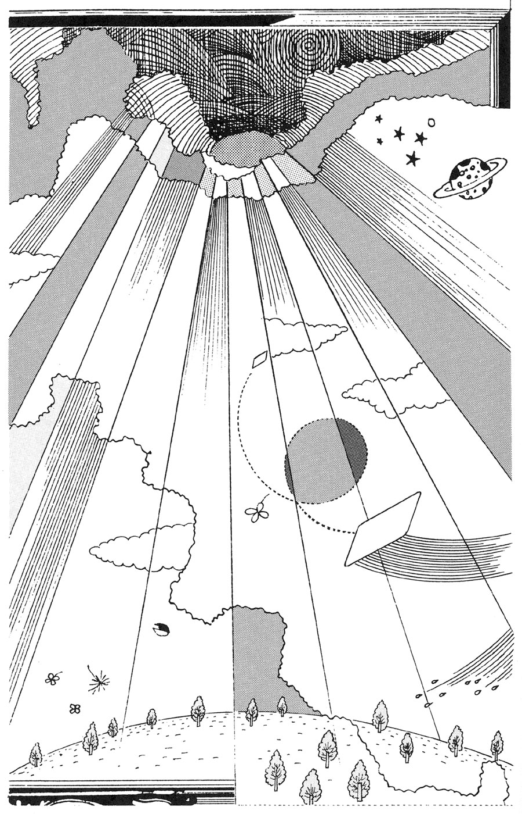
またカチリと音がし、上の口から何種もの鳥たちが、つぎつぎと飛び出していった。その下の口からは、ウサギ、ネコ、イヌ、ブタが出現した。
ネコはネコ科の動物、トラなどに分れる。イヌはイヌ科の動物、オオカミなどに分れる。ウサギは、コアラ、パンダ、テディ・ベアなどに分れる。
あとは、いちいち説明するのは大変だから、タヌキが化けていると思っていい。キリンだの、シマウマだの、ラッコだの、あんな奇妙なのは、普通じゃない。
タヌキとは、ウサギ、ネコ、イヌ、ブタの混血である。正体がわかると、そういえばと感じる人も多いはずだ。
まあ、そんなふうになったところで、自動販売機は、しばらく考えた。われわれの思考力とは、けたがちがうが、そのようなムードだったのだ。
おかしな音がし、それは二つに割れ、なかから少年と少女が出てきた。風は、やさしく祝福し、カードは使命を果したと、別れを告げるように飛び去った。
割れた装置は、疲れはてたように、こなごなになって大地に散った。それを風が吹きあげ、星々となった。あとには、なにも残らぬ。
人間が今いるのは、これらの結果である。
表紙の神話
そもそもは、なにもなかった。時間もなく、わずかな空間すらなかった。暗い静寂という、きわめてつまらない状態だった。
それは、なんの予告もなしに発生した。
天と地がわかれ、光がみちた。
さまざまな声もうまれた。
「なんだ、なんだ」
「すごいぞ、これは」
「どうなるんだろう」
「うまくいくかな。心配だ」
「押すなよ」
すべてが動き出した。
天と地がわかれたのではなく、本の第一ページが開かれ、ものごとがはじまったのだ。たぶんそこには、題名や目次があったはずだが、まず会話に目がいってしまい、つぎのページになってしまった。
それから、長い年月がたつ。面白いので、先へ先へと話をたどるが、最初のほうのストーリーは忘れてしまっている。しかし、読んでいる今が、スリル、サスペンス、ユーモア、快楽を味わわせてくれれば、それでいいではないか。時には、考えさせてもくれる。
これは、中国のチョイン一族に伝わる神話である。種族といったものではなく、書物をはじめて作った祖先を誇りとする一族のこと。
こうとしか考えられないと信じている。第一ページを開いた、人間にははかりしれない存在。祖先をさかのぼれば、それにつながるのではとも思っているが、そこまでは語らない。
だから、一族は運命論者であり、すべては予定されていて、時の流れはそれをたどるだけと信じている。
しかし、自分たちが最後に祝福されるとも信じている。だって、本の製作者が不幸になったら、どうしようもない。この世界は、ありえないことになる。
いつの日か、最後のページが終り、暗黒となるかもしれない。しかし、また、いつの日か、光の時代がはじまるのだ。
チョイン一族は、イギリス、アメリカ、その他の国々の、ガボール派教徒の神話をきらっている。それは、こうだ。
はじめは、雲と大地だけがあった。なにかのけはいが高まり、強力きわまる落雷となった。いうまでもなく空前であり、たぶん絶後であろう。
その大エネルギーの電気に大地が反応し、ホログラフィー能力が作動しはじめた。立体映像の変化の開始であり、いまにつづいている。
どう判断なさるかは、ご自由である。
天空の神話
暗黒だけが、満ちていた。
とつぜん、明るい塊がシュルシュルと天にのぼり、しばらくのあいだあたりを照らし、山のむこうへと消えた。闇が戻った。
本当にシュルシュルと音がしたのか。聞く者がだれもいなければ、音はないのか、あるのか。この議論については、いまはやめておく。
暗いなかをふたたび、なにかが上にのぼり、それはみごとに天空に散った。想像するだけでも胸のおどる光景だが、だれも見た者はいなかった。しかし、それによって、月と無数の星々が残った。
やがて、明るい丸いものが、反対の方角からのぼり、上下左右をにらみつけながら、空を横切った。見る者はいないのだが、不快そうだった。ただ強く光るだけで、あっけなさを感じるのだろう。天空に輝く小さな連中たちは、光るのを遠慮した。
中断がはさまる。これがくりかえされると、天空で遊んでいにくくなり、まず少女が地上へおりてきた。彼女は、自分のいたあたりを、乙女座と呼ぶことにした。
つづいて、小犬がおりてきた。そのいたあとが、小犬座である。小熊や大熊もおりてきた......。
彼女が結婚したのは、牛飼いではないかとされている。かくして、地上は地上らしくなっていった。星座がその形に似ていないのも当り前で、重要な部分はおりてきて、もといた場所という意味なのである。
それにしても、太陽は気の毒と、それぞれに色のちがう七つの星が、なぐさめのために地上へおりてきた。そして、虹ができた。
「きれいだなあ」
との声を、太陽も聞けるようになった。本来なら、夜空に七つの色の星々の輝くのを見ることができるはずなのだが、仕方ない。太陽が怒って、異変を起されてはかなわない。
また、地上の者たちも、太陽の恵みに感謝するようになって、まあ平穏である。
花火の出現は中世、十三世紀の末という説もある。西洋で火薬が利用されはじめた時代である。しかし、くわしく調べると、ギリシャ・ローマ時代に存在していたという説もある。
中国では、はるか昔に火薬を使っている。それが、バビロニアをへて、ギリシャ人に伝わり、それは秘法として、親から子へとうけつがれた。うちあげる機会は、多くなかった。
星座名により、バビロニアでは占星術が生れ、発展して今に至っている。
そのため、この神話はかなり広く知られている。彼らは心の底で、ビッグバン信者の神話を軽蔑している。焼きなおしなら、もっとうまくやれと。なお、ビッグバン神話とは、こうである。
はるかはるか昔、大爆発が起きた。それから星が生れ、そのひとつが太陽で、そのまわりに地球ができたと。
夢がない。その爆発の前はどうだったかの説明のないのは、神話だから、まあ許す。しかし、くらべれば、たしかに無味乾燥だ。
海の神話
はじめは、海だけがあった。はてしなく広がっていて、どちらにむかっても、海だった。海面にうねりはあったが、打ち寄せる岸というものは、どこにもなかった。
上には空があり、そこを太陽が横ぎっていたが、あれは、無限の昔から、ああだったのだ。とるにたらぬことだ。
海洋民族のひとつ、ロパホ族の神話だから、そうあってもいいはずである。風は水よりも軽いので、水よりも上にあり、雲はもっと軽いので、その上にある。重さの点では、太陽はさらに軽いはずだ。
月は丸くなると近くにおりてくるが、半分に欠け、さらに細くなると、軽さで遠くに離れてしまう。星々は、はるかかなた。
神は海の下の、奥の奥においでになる。その重いこと、それは貴さゆえにである。あまりにも深い海の奥なので、どのような生活をなさっておいでかは、くわしく知ることはできない。
おそらく、ひとり静かに、お眠りになられていたはずだ。ずっと、夢をごらんになっていた。どんな夢かとなると、それはご自分の夢しかない。海の奥には、くだらないものなど、存在するわけがない。
神の夢は、それと同じく貴く、また重い。眠れる神のそばで、その形をとる。それは最初はごく小さいものだったが、少しずつ大きくなってゆく。
現在あるものでたとえるのは、おそれ多いのだが、真珠をお考えになるといい。いかに長い長い年月がたったことか。
それが自分と同じ大きさになった時、神は目をさまされた。神の意識は、そばのからだのほうにお移りになる。
「さて、また眠りにつくか。しかし、これがそばにあっては、よろしくない」
神は古い自分のからだを、いくつもに切断した。もはや、それは不用品。意識が移ったあとなので、軽くなっている。そのため、安っぽい方向、つまり上へと浮いていった。
それらは、風ほど軽くはなく、海面の上に出現し、いくつかの島となった。なぜ流れて移動しないかというと、不用品とはいえ、神と関連のある部分だからだ。
海の奥へと戻っては、お眠りのさまたげとなる。また、さらに上の雲のあたりまでゆくほど、いやしいものではない。
海面を動いては、まさに万一の比率ではあるが、神の姿につながりかねない。それを知られては、ありがたさがなくなるのだ。島が動いてはならない。
軽い場所へ来たため、さまざまなものが、独自な形へと変化した。ロパホ族の聖地、ブホ島は、かつて眼の部分であった。まつ毛は、どれも人間となった。眉毛は、ヤシの木となった。
魚も、鳥も、そのほかなにもかも、この時に活動をはじめたのである。貝は、爪から変化したもの。のちに金属と呼ばれる物質は、骨から変化したものである。岩石やサンゴ礁は、たぶん歯から変化したものである。
めったに手に入らないが、黄金はその重さのため、神がご入用だろうと、海へ投げ込むのが習慣である。
植物の多くは、髪の毛からだ。人は、木や草を結合させて舟を作り、ほかの島々へと発展していった。もとはひとつなので、島々は流れや風によって、航海しやすいようになっている。
この種族は、人が死ぬとその霊は、海の底へとむかってゆくと信じている。目には見えなくても、重みを持つ。海へ入ればさらに重さを増し、神のおそばへ行く。そして、夢による神の次のおからだの、形成に加われる。
神はいまも、お眠りになっておられる。潮汐は、その呼吸のあらわれである。未来のいつの日か、神はお目ざめになり、新しくなられる。その時、世に異変が起るが、彼らは助かり、この神を信じない者たちは、消え去るのだ。
やじうま神話
一群の、やじうまがいた。
べつに、人間の形をしていたわけではない。好奇心という意志のことである。暗いなかで、色を変えながら、点滅しているものがある。ほかになにもなければ、点滅の存在が気になり、どうなるかが知りたいという意志が集ってきても、むりはない。
点滅するものは少しずつ大きくなり、形と動きを示すようになった。
たとえようもないが、むりにやれば、後世に呼ぶ竜といったところか。銀と金のまざったような、光るウロコにおおわれている。ウロコのあいだからは、葉っぱが生え、花もつける。葉や花は、しばらくして散り、下につもって土となる。あとには、つぎの葉が出てくる。汗をかきやすい体質なのか、たえず汗をしたたらせている。
竜は背に翼をそなえ、ゆっくりとはばたいて、宙に浮いていた。
口からは、炎と煙を吐く。煙はひえると、灰となって落ちる。竜は奇妙に身をくねらせ、好奇心たちを、あきさせなかった。
時には早く、時にはおそく、尾を振る。先端からなにかほとばしるのか、ちぎれて再生するのか、そこまではわからなかった。
花は種子を作り、それは各所に散っていった。翼からは、胞子がまかれている。
この木火土金水より成る竜は、色を変えながら踊り、リズムの音も出しはじめた。
一段と期待が高まった時、竜は強烈きわまる火を吐いた。あまりの輝きに、これで消滅かとも思えた。しかし、ほどよい明るさになり、竜は以前より外見がはっきりした。大地に立っていて、下にかげが出来た。
吐かれた火球が天にのぼり、太陽となったためだが、そんなものより、竜のほうがはるかに関心の的だった。
しかし、竜は長く伸び、前にくらべ動きがゆっくりになった。
「おい、動きをやめるな」
「がんばれ」
「動かなくなったら、われわれはどうなる。退屈で風化し、消えてしまう」
それに応じるかのように、長く伸びたからだは、結び目を作ったり、輪となって回ったり、両端を近づけて火花を光らせたりした。
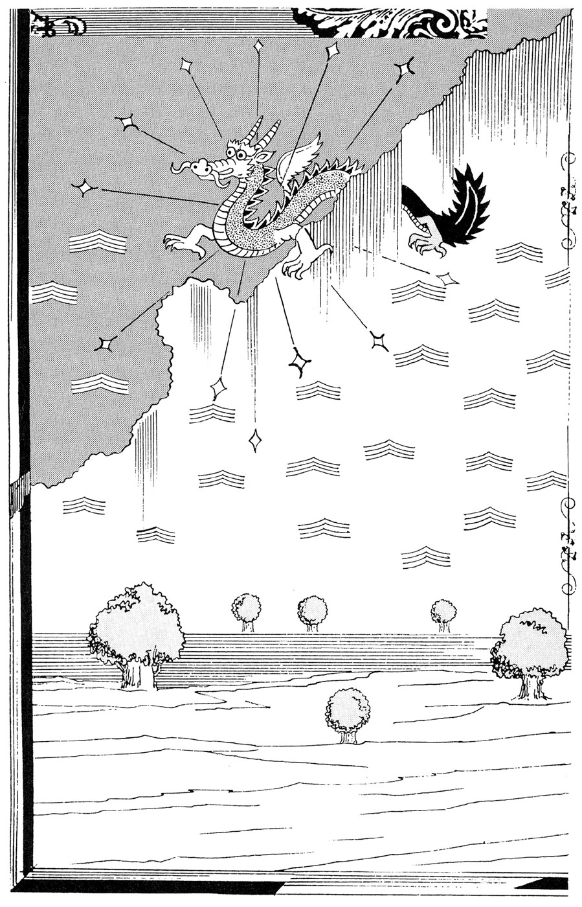
「そうだ、それでいいんだ」
「予想外の変化こそ、価値なのだ」
「なんのためにいるのか、考えてみてくれ」
また、長い時間、それがつづいた。
そのあいだに、大地はひろがり、遠くには噴火する山もできた。植物もふえ、動物もふえ、人間もできた。
月や星や海もできた。はえかわるたびにウロコが落ち、地下の鉱脈となった。
やがて、竜の姿は薄れはじめた。
「おい、どうした。消えるなよ」
「元気を出せ」
「しかし、ずいぶん、いろんなことをしてくれたからな。疲れたかもしれない。そんな感じも受けるな」
ついに、竜は見えなくなった。やじうまたちは、これからどうしようかと、とほうにくれた。見聞したことを話したかったが、植物も動物も、相手にならなかった。
ただ、人間だけには、言葉が通じた。
「なあ、面白い話を聞いてくれないか」
「面白いって、なんです」
うつろな目ではあるが、人間は返事をした。やじうまは、自分たちの外見を、人間に似たものに変化させた。そのほうが会話をしやすそうだ。
「ふしぎなことに、光の色が変るのだ」
「ふしぎって、なんのことです」
「ひとつの、気分さ。つまりね......」
大変な作業だったが、時間はたっぷりあるのだ。なんとか、理解させてやろう。
かくして、驚き、楽しさ、なぞ、心配、激励、期待、落胆、同情、あきらめ、話す興味など、さまざまな感情を伝えた。
木火土金水から成る、よくできた人形といったものだった人間も、感情や思考を持つようになった。それらを伝えつくすと、やじうまたちは消えた。残った人間たちが、話しあう。
「妙な話だったなあ」
回想の感情があらわれた。
「本当だったのかな」
疑いの感情もあらわれた。
「ひとつ、だれかに、もっと大げさに話してみるか」
創作と、娯楽の才能もめばえた。
「その、竜とかいうもの、われわれに作れないか」
未来への努力の念も生じた。
古代中国の、ある種族の神話だが、権力者が世をまどわすとして、この物語を禁じようとした。よくあることだが、自分こそ神といいたいのだ。
そのため、物語るのを好む仲間は、苦難を覚悟し、山づたいに南西へ移動し、現在はインドの東部に居住している。やじうまたちに、それぞれ名がついたが、ヒンズー教の多くの神々に変形してあるので、周囲と問題を起すこともない。
ある民俗学者が、この地方の神話の特色に気づき、多くを採集した。帰国して、コンピューターにかけ、再構成したものが、ここにまとめた物語である。
さざれ神話
君が代は 千代に八千代に
さざれ石の いわおとなりて
こけのむすまで
「ちょっと、ものをたずねたいが」
「おや、都からのお役人のようですね」
畑のそばにいた老人は、軽く頭を下げて言った。年配の役人も、にこやかだった。
「かたくるしい話ではない。このたび、多くの歌を集め『古今集』として、まとめることにした。紀貫之さまなどが選ぶ」
「けっこうなことで、ございます」
「そこでだ、君が代の歌だよ。わが君は、となっているのもあるが、さまざまな地方で、お祝いの時に歌われている」
「はい」
「本来なら『万葉集』の時に収録されていていいのだが、内容がいかにも奇妙。しかし、今回は無視できないときまった。読人しらず、題しらずの作だがね。どういうことなのだ。なにか知っていないか」
ふしぎがる役人に、老人は言った。
「あなたさま、帰化人では」
「父が若いころ、この国に移ってきたそうだ」
「そういうかたは、頭はいいが、まだこの自然に、とけこんでいない。いずれ、なれますよ。口ずさんでいるだけで、心がなごやかになる」
「呪文のようなものか」
「効果としてはそうですが、これは天地のはじめについての、真理を語っているのです。真理であるがゆえに、ここちよく美しい」
「くわしく知りたいね」
「その石におかけ下さい。書きとめようとしたりせず、すなおにお聞きを。わたしも、きょうは調子よく語れそうだ。お山の霊気も助けてくれそうですし」
老人は話しはじめた。
そもそものはじめは、上も下もなく、薄暗かった。目に見えぬ力が満ちていた。目に見えるものといったら、さざれ石、つまり砂粒。それが空間をただよっていた。粒のなかには、きわめて小さく、それ以上に割ったら性質を失うほどのもあったろう。
やがて、その砂の粒子たちは集り、少し大きな塊の石となった。そうなると、まわりの粒子を引きつける力も強くなる。宙を動きながらなので、雪ダルマのように、しだいに巨大になってゆく。
岩の全体は大変な量になり、重みによって、内部は熱を持つ。お祭りの時、裸の若者たちが押し合いをやり、湯気が立つでしょう。手をこすり合わせても暖い。石と石がぶつかると、火花が散る。
やがて、全部が輝きはじめる。それが、あの、お日さまです。
そこまで大きくならず、途中でとどまったのが、この大地。そのうち、原始的な植物、こけが表面に発生した。ばかにしては、いけませんよ。それが分化し、人間を含む、さまざまな動植物になる。
さざれ石、岩、こけ。
これがすべてのはじめです。真理は、つねに単純なのです。おわかりですか。
「そこで、ひとつ」
役人が言い、老人はうなずく。
「どうぞ」
「すると、大地は丸いのか」
「そうなりますね。丸くて回転しながら、お日さまのまわりをまわっているのです。たとえれば、渦に乗っているように」
「すると、この国の人たちは、そのような妙な話を、だれもが信じているのかね」
「信じるのとは、ちがいます。感じとるのです。暑さ寒さ、一日の長短があり、四季があり、自然はよそおいを変える。草も虫も鳥も、べつなものとなる。しかし、もとは、みな同じなのです。説明はできませんが」
「そんな気もするな」
「台風もあり、梅雨もある。地震もある。月は丸くも細くもなり、それは作物ともかかわっている。この近くに温泉があります。岩にたまって、たっぷりありますよ。お湯は地下から。理屈ぬきで、感じるでしょう」
「あとで、入れてもらうかな」
「からだが軽くなるようですよ。白く濁った湯なんですけど、よく見ると、小さな小さな無数の粒がただよってるんですね。疲れがとれます。なにかの力が、あるんでしょう」
「そこで、あの、君が代か」
「だから、各地にひろまってるんです。ひっかかるものがあったら、だれが歌います」
「いくらか、わかるね。わたしは、この国で生れ、育ったせいかな」
「でしょうね。だけど、ほかの国の人は、自分がなぜ生きているかを、どう考えているのでしょう」
「わからんね。父からは生前、そんな話は聞いてなかった」
「あと、なにか」
「ないね。読人しらずがいいな」
「山や木々の、ささやきですからね」
ブガン神話
大地は、岩石がはてしなくひろがっていた。空は一面の雲でおおわれていた。荒涼きわまる眺めだった。人間がこれを見たら、すぐに目をつぶってしまうだろう。まっ暗なほうが、まだましだ。
その二つのあいだを、煙の塊のようなものが、浮いてうごめいていた。あっちへ動き、こっちへ動き、形も一定でなかった。のちにこれは、ブガンと呼ばれるが、その存在にとっては、名など、どうでもよかった。
それは、不快さを発散していた。天も地も、最初はまざりあっていたのだが、ブガンの出現によって、はなればなれにされてしまった。雲はブガンをきらい、おりてこない。
ブガン出現前の世は、どうだったのか。そのいきさつさえ、ブガンに食われてしまい、消失してしまった。
ブガンは、他の存在を許さない。貪欲そのものだった。なにものをも、呑み込む。現在でいえば、ブラックホール的なもの。
むしろ、萩原朔太郎の散文詩の「死なない蛸」を連想させる。詩人には申しわけないが、ここに要約する。
人のこなくなった水族館の水槽。ガラス越しに見ても、くさった海水だけ。そこには、かつて蛸が飼われていた。餌を与えられなくなって、何日もの飢餓のあげく、自分の足をもいで食べた。足がなくなると、内臓、皮、脳、ついには胃袋まで食べつくした。
姿はないが、ものすごい欠乏と不満とを持ったなにかが、そこに生きつづけている。
ブガンは、そのようなものだったのだ。
意に反して分離させられた天と地は、ブガンほどでなくとも、不満を抱いていた。それは雷となる。イナズマが天地をつなぎ、落雷の地点には、雨滴も残る。しばらくすると、そこに草が生えてくる。
しかし、それは育つことがなかった。ブガンにみつかると、たちまち食われてしまうのだ。
遠くでまた、落雷がある。ブガンはそこへおもむき、食べてしまう。それが、むなしくくりかえされていた。
天はある時、いっせいに雨を降らせた。ブガンに敵意を持つ大地も、それを手伝った。つぎつぎに食べられていた草も、根は地中に残っていて、同時に育ったのだ。雨のため、大きくなるのも早い。
ブガンは怒ってか、快感を持ってかはわからないが、すべてを食べつくそうとした。しかし、なにしろ、広大な地面。しばらくたつと、草が生える。
動きは、にぶくなる。不定形とはいえ、その形も色も、妙なものへと変った。迫力も弱くなる。いくつにも分裂した。
そして......。
その先は、うまく話せない。排泄物の描写は、苦手である。ご想像にまかせる。粘土細工のように、さまざまな動物が作られた。
これは東アジア内陸部、遊牧民の一種族の神話で、家畜のフンは貴重であり、おおらかで、もっともなものなのだ。
とにかく、ブガンはいなくなり、空の晴れる日もふえ、川は流れ、自然界はふさわしい形となった。人びとは雷が鳴ると、短い感謝の言葉をとなえる。
この神話は南方へ伝わり、ブガンには人格が与えられ、盤古と称されている。
しらけ神話
そもそものはじめは、しらけきっていた。昼夜はあれど、季節はなし。
大地の一カ所に、小さな林があった。ただ一種類の低い樹木の集り。葉っぱも、花も、つまらないもの。
昆虫がはいまわり、葉をかじり、卵を生む。これも一種類だけ。葉から葉へ、羽で少しだけ飛べる。
あとは、ハネナシドリ。一種類だけなので、名をつけてもしようがない。鳥のような外見だが、飛べない。昆虫を食べ、卵で子供を作る。そのフンや死体は地面に吸収され、植物の養分となるのだった。
同じことの、くりかえし。面白くも、おかしくもない。存在しないのと、同じことだ。
年月の長さを書いても、意味がない。
ある時、林の中央に亀裂が走って、二つに分れた。大地もしらけたのだろう。そこを水が流れ、川となった。林は二つになったわけだが、同じことのくりかえしだった。
川の一方の生態系Ａに、ヘビがやってきて、ハネナシドリを食べて帰った。そこで排泄されたフンから、昆虫の卵が孵化した。そして、ヘビに話しかけた。
「わたしを食べないんですか」
「虫は食わぬのだ。それに、さっき食べたあれ、なんだ。味もなく、しらけるな」
「ここに植物はないんですか」
「そこに草がある。たまにかじるよ。食欲を高め、消化を助ける」
昆虫はそれを食べ、声をあげた。
「すばらしい味だ。なぜ、ここにこんな草があるんです」
「よくは知らないが、神さまが作ったんだろうよ」
「タネをくれませんか」
「いいよ。やらなかったら、おまえらがここへ来て、ふえるだろう。すると、あの、しらけた味のも来る。ぞっとするね。タネを持っていって、二度と来るな」
帰巣本能でその昆虫は戻り、生態系Ａには、少しの変化が起った。タネが根づき、その草がふえはじめた。
しかし、たちまち食いつくされることはなかった。ハネナシドリは、草のそばにいたほうが、昆虫を楽に食べられると知り、そこに多く集るようになった。
川をはさんだ生態系Ｂのそばを、アリの行列が通った。ハネナシドリは、それを食べてみた。
「いい味だね」
「おせじかい。じゃなかったら、あんたがたが、どうかしているのさ。神さまの作ったのと、ただ意味もなく存在しているのとの、ちがいさ」
「もう少し、食うよ」
「働きアリだから、惜しげもなく食われてやるけど、変な気を起さぬほうがいいと思うよ。いままでのままなら、だれも目もくれず、永久に安全で平和だよ」
そのハネナシドリは、行列のあとについていった。みながアリ塚のなかに入ってしまっても、そばで待ちつづける。アリが言った。
「そこにいられると、しらけちゃうな。虫の卵を少しやるから、持って帰れよ」
林へ戻って、木に卵をのせた。それがかえると、クモとなった。巣を張り、昆虫をつかまえて食べる。ふえたクモを、ハネナシドリがつかまえて食べる。しかし、それには飛びあがる努力と、技術がいる。
変化がはじまり、競争意識がめざめると、あとはもう、あっというまだ。ハネナシドリに翼ができると、九官鳥となる。前脚が発生すると、ウサギとなり、その大形のがカンガルーだ。
やがて、人間も出現した。わけなど、知らん。神さまのしたことだ。くわしくは、そっちへ聞いてくれ。
人間は穀物や野菜を作り、家畜を作った。ほかの動植物は、神さまが作ったのだろう。むりに信じなくてもいいが、現実にある。
もう、なにもかも、ごたつく一方。どっちがよかったか、だれにもわからぬ。神さまにだって、わかるまい。
ただ、原形を保ち、さらに単純化している生態系も、なくなったわけではない。ユーカリの木と、コアラ。昆虫の介在も不要だ。これを見て、なぜか心がなごみ、つぶやく人も多い。神よ、彼らをお守り下さい、と。
もしかしての物語
花も嵐も
十二世紀の後半、日本に源義経という人物がいた。京都の鞍馬寺で育ち、幼名を牛若丸といった。
夜、京の町へ出て、笛を吹きながら歩いていると、弁慶という大男が刀を奪おうと襲ってきた。それを降参させ、忠実な部下とする。
東北地方、つまり奥州の藤原家に移って成長し、好青年となる。武芸にすぐれ、学問はあり、戦術や戦略を学び、勇ましいだけでなく、上品さも身にそなわった。
天下の実力者、平清盛が死去。この時とばかり、兄の頼朝が東国で反乱の動きをはじめた。義経はその命を受け、西へ進み、一ノ谷の戦いで勝ち、平家を追い払った。
しばらく京の守護職をつとめ、法皇や公卿と親しくなり、頼朝にねたまれる。
指示により、瀬戸内海の屋島で、奇襲により勝ち、さらに西の海、壇ノ浦では潮流を利用する才能を発揮し、平家を全滅させた。
死者たちのうらみは、そこの海のカニの甲羅に顔の形として残っている。また、その時、幼少の安徳天皇は、女官に抱かれて海に入って死んだ。義経はつぶやく。
「なんだか、いやな感じだなあ」
それは、現実のものとなってゆく。人を操るのがうまい後白河法皇のため、兄の頼朝と対立関係になり、部下たちと吉野山のあたりをさまようことになる。
そのうち、愛人の静御前が頼朝側につかまり、鎌倉へ送られた。身分の低い出だが、舞の巧みな美しい女性。
義経はがっかりしたが、弁慶たちにはげまされ、山伏姿となって、奥州の藤原家をめざす。途中、安宅の関で怪しまれたが、なんとか通過できた話はよく知られている。
安宅の関は現在の石川県、日本海ぞいの地。山越えは、容易ではないのだ。
奥州にたどりつき、ひと息ついたが、その藤原氏が死亡。あとをついだ息子は、頼朝側についたほうが有利と義経を襲う。
部下と逃げたが、数の差はどうしようもない。追いつかれて、義経は言う。
「もはや、これまでか。では、ここでいっしょに、いさぎよく......」
それを、弁慶がとめた。
「まだ、三十一歳ではありませんか。なんとか逃げて下さい。みじめな死体となっては、夢がなくなります。北へ進めば、それだけ藤原側の支配力も弱くなるはずです」
「で、おまえは」
「全力で防戦し、時間をかせぎます。わたしなりに、伝説上の人物になってみせます」
「では、たのむ。おたがい、いい仲間だったな。いつまでも忘れないよ」
思いを残し、北へむかう。部下は数名。重いヨロイをぬぎ、刀と槍を持って歩きつづける。ついに北のはてまで来た。
「元気を出せ。北をめざそう」
「だって、海が」
口数を少なくさせる、津軽海峡。
「むこうに、陸が見えるぞ。むかしから、北へ行こうと決めていたようだ。さっき、道ばたで盲目の老女に会った。そのお告げによると、新天地が待っているそうだ」
「そうしますか」
「船をみつけてこい。藤原家から、黄金の塊を、かなりくすねてきた。平泉のあの、金ピカの寺を見たか。大量に出るのだろうが、趣味が悪い。代金の役に立つだろう」
「でしょうね。もはや、戻れないのだし」
エゾの地へと渡る。もう追ってこないだろう。元気も出る。はるばる、来たるものかな。海岸にそって東へ歩くと、わりとまともな建物があった。訪れてみる。
「すまんが、少し休ませてくれぬか」
「どうぞ、お入り下さい」
義経の一行はくつろぎ、その青年に話しかけた。
「エゾの人のようではありませんね。なにか、いわれのあるかたのようですな」
「ここなら、話しても大丈夫でしょう。父をはじめ家族は、平家の落武者なのです」
「これは驚いた。申しわけない」
「なんで、あやまるのです」
「わたしは、源氏の落武者でして」
「だれの天下も、久しからずですな。やがて、北条さまか、楠木さまですか。で、あなたのお名前は」
「義経です」
「なんと。父や兄が留守でよかった。父は平家の水軍の指揮者。壇ノ浦でなんとか逃げのび、北の海を通り、この地へ着いた」
「安宅の関の沖を進んでですな」
「ここの海の魚や昆布を船で運ぶと、いい商売になるらしい。もう武士はやめ、お金もうけに専念です。各地の落武者が、引き取ってくれる」
「うらやましい」
「これから、どうなさいます」
青年に聞かれ、義経は答えた。
「さらに、進んでみるよ。新天地をさがす以外にないのだ。お告げでもある」
「お手伝いしましょう。武士もいやだが、金勘定の毎日もつまらない。余分な船があります。幼少の天子の死は、あなただけじゃない、わたしの父の責任でもある。真犯人は、あの女官ですがね。しかし、わが一族のだれかが、なにかでつぐなうべきです」
京では、公卿たちがうわさしていた。
「義経が、死んだそうだな。まだ若いのに、惜しい男だ。勇敢で、戦いに強かった」
「礼儀ただしいやつだった。それが、兄の頼朝にねたまれ、討たれるなんて」
「死体は不鮮明だそうだ。あるいは、どこかへひそみ、ふたたびこの地へと......」
「それは、いけません。中年の義経なんて、しっくりしない。思い出のなかにいるからこそ、いいのですよ」
「そういえば、みごもっていないことが判明して、頼朝に許され、静御前が京へ戻ってますな。あの人、どうしているかしらと、義経をしのぶ舞が、評判です。心の底まで、じんときますよ。応援してあげませんか」
「物語作者にたのみ、いい話に仕上げさせましょう。われわれ貴族は、文化を育てなくては」
そのころ、船は、のちに太平洋と呼ばれる海を進んでいた。北太平洋海流、アラスカ海流、カリフォルニア海流へ乗る。つねに東のほうに、陸地が見えていた。
「新天地も、広いものだなあ」
南へと進む。時どき海岸へ寄り、水を補給した。貝や果物も、手に入った。
「おーい、元気でな。がんばれよ」
と岸から声をかけられたこともある。
「なんだ、あれは」
「われわれより、先に来た人でしょう」
「まったく、日本人はどこにもいる」
暖い気候の地域へ来た。
「きりがない。このへんに上陸するか」
いまでいう、メキシコの海岸へ船をつけた。住民たちがやってきて、集った。持ってきた黄金を見せた。しかし、彼らは、少しもありがたがらない。
刀を抜き、木の枝を切ってみせた。驚きの声があがる。使うこともあるまいと、槍を含め、全員の刀を進呈した。そのお礼のつもりらしく、連日のもてなし。
それぞれ、思い出話にふける。エゾから同行の青年は、義経の人生を知りたがった。この地方には巨大な石造物が多く、吉野を逃げまわった時の、飛鳥地方を思い出させた。また、安宅の関を通る時の、虎の尾をふむような気分についても、熱をこめて話した。
義経は、そばの住民に聞いた。この地はなんと呼ぶのか。身ぶりであたりを指さし、両手を口に当てて息を吐いた。
住民は言った。
「アステカ」
義経たちの会話のなかで、おぼえた言葉は、と受けとったらしい。アスカとアタカの混合。
源氏の白旗を出すと、住民たちは妙な図を描き、なにか言う。義経はそれを見て、これから進攻したい地方の、地形と相手の布陣らしいと判断した。
まかせておけだ。ここをたどり、ここを攻略。作戦を指示した。それがなんと、連戦連勝。刀で何人かの首を切った者がいた。敵は恐ろしい武器と驚き、総くずれになったとの報告を受けた。アステカの支配下の地は、大きくひろがった。それを国名にしてしまったのだ。
「どう、お礼をしたものか」
という気分らしい。いけにえ用の若い女性たちが、各人にくばられた。また、なにか薬草を煮た汁も出された。飲むと、夢のなかにいるような気分になる。
部下の青年が義経にささやいた。
「アステカと名づけられて、うれしがっています。太陽の神の国の意味になるらしい」
「アマテラスのクニか」
義経は薬草に酔い、子供の時から持っている笛を吹いた。青年が言う。
「元気すぎますよ。おたがい、ほろびた立場でしょう。もっと哀切に。貸して下さい」
青年が吹く。祇園精舎の鐘の声、諸行無常の響きあり。一ノ谷の、いくさ敗れ......。
そんな感情のこもった曲だ。アステカの人たちにも流行した。義経は言う。
「滅亡の先輩だけに、美しいね。しかし、はやらしていいのか。心配だな」
飲む薬草の液の量がふえる。妙なキノコをまぜたらしく、幻を見る。静御前、戦いの興奮、京の公卿たちとの社交。
時たま、妙な幻覚がまざる。騎馬兵団をひきいて、草原で戦う光景。
「なんだ、こりゃあ。海や森は好きだが、殺風景な野原はいやだよ」
飲む量がふえる。そのうち幻の弁慶と会って話し、安徳天皇にあやまりもした。幻でなく、霊なのかもしれない。人生に悔いを残さず、義経はあの世へと入っていたのだ。
一時期、メキシコ地方に栄えたアステカ文化も、やがてスペイン人の侵入で滅亡する。住民たちは、伝説を語りながら話しあう。
「かつて、ある人物を迎えた。輝く剣を持ち、戦いの指揮もうまく、国も栄えた。アステカ時代を持てたのだ」
「神の使いだったのかな」
「わからん。逆の占いもあったそうだ。一時的にはいいが、滅亡の悲劇を引き寄せる人かもしれないとね。こうなってはなあ」
話がとぎれると、だれかが、かなり変形されているが哀切な曲を歌いはじめる。
旅情
十三世紀の後半、フビライ帝の支配する元の首都は、いまの北京だが、大都と呼ばれていた。その宮殿に朋楼西という少年がいた。
ベネチアの貿易商、ニコロ・ポーロがこの地に来た時、帝は歓迎し、ひとりの美女に世話をさせた。そこで生れたのが、楼西。本来、姓はポーロ、西の人の子という意味だ。
ポーロは磁針を仕入れ、持ち帰って利益をあげた。つぎに来た時には、染料を献上して喜ばれ、特産の筆を仕入れた。
楼西は利口で、かわいらしい。フビライ帝は宗教に寛大で、仏教の僧も、キリスト教の宣教師も、多かった。楼西はイタリア語も習って育った。
「また来るからね。そのうち、西の国へ連れていってあげるよ」
ポーロは筆を売ってひともうけと、帰っていった。しかし、留守がちは、よくない。家に戻ると、夫人はある貴族と深い仲になり、いなくなっていた。むすこのマルコだけが残っていた。
「マルコ、ほっといて悪かった。これからは、一緒にすごそう。東へ旅をしよう」
筆での利益で、楽譜を仕入れた。この利用法を教えれば、また喜ばれるだろう。マルコは楽器がひけるのだ。
かくして、十七歳のマルコは、父と叔父とともに、シルクロードの旅に出た。楽な旅ではないが、若い彼には面白かった。
大都へ着くと、朋楼西は十三歳になっていた。ニコロは、マルコへ紹介。
「この楼西という坊やは、おまえの弟だ。仲よくしてくれ。いずれ連れて帰る」
「よろしくな」
「こちらこそ」
血のつながりはともかく、言葉の通じるのは、親しみのもと。話し合い、知識の交換をする。
フビライ帝は、ポーロたちを気にいった。マルコが楽譜を献上し、笛で演奏してみせると、帝は感心した。こいつは、かなりの才能の主らしいと。
楼西が手伝い、竹で自動笛を製作。まあ原始的パイプオルガンだが、それを使って音を出すと、帝は尊敬の念を持った。
「おまえは、わしの相談役になってくれ。西との交易の担当だ。国内行政や産業振興にも、意見を出してくれ。各地を自由に旅行していい。最高の待遇をするよう、命じておく」
ニコロは、かつての体験が生かせる。楼西は通訳として優秀だ。きげんを損じないよう、最初は地道に努力した。
元はモンゴルから進攻してきた王朝。北方警備は心配しなくていいのだ。マルコたちは、運河を作り、持ってきたキャベツの種をまいて栽培させ、実績をあげた。
都から離れて出張すれば、美食、美酒、美女と、望みほうだい。人口の少ない時代だ。ちょっと改良すれば、すぐ向上する。泉から町まで水道を作る指図をすれば、大変な感謝をされる。
二十年を越す年月が流れた。
面白いけれど、望郷の念もある。帝はなかなか帰国を許さなかったが、ペルシャ（イラン）への外交使節の役が回ってきた。重要であり、ほかに適任者がいない。
船旅でマラッカ海峡からインド洋を越え、おだやかなホルムズに上陸。仕事をすませ、故郷ベネチアに帰りついた。
この時、マルコは四十一歳、楼西は三十七歳。マルコは言った。
「やっと帰れた。楼西よ。いろいろと世話になった。生れ故郷へ戻りたければ、そうしてもいいよ」
「東洋は見つくしましたよ。後半生は、こちらで楽しみます。ずいぶんワイロを取ったので、資金は充分です。これからは、サイ・ポーロと名乗ります」
「ワイロをためてたのか」
「商人の利益と、似たようなものですよ。強奪でなく、むこうが出したのです。ヨーロッパ各地に支店を出し、金貸しでもしようかな。イタリア語でないほうがいいか。ベニス商人銀行」
「金貸しとはね」
「元で、ご覧になったでしょう。紙幣の通用しているのを。いちいち金銀を持ち歩くのは、重くていけません。近代化は金融からです。いずれ、海上保険も扱う」
「しかし、ベニス商人銀行とは、語感が悪いなあ。社会を変えるのには、フビライ帝のような強力な指導者がいないと、時間がかかるのだ」
マルコがためらうと、かつての朋楼西、いまのサイ・ポーロは提案した。
「それもそうですね。では、旅行記をお書きなさい。つまり〝東洋事情〟ですよ。文明開化のためになる。だれか文のうまい人に、筆記させよう。わたしも手伝います」
「本を作るのは、大変だよ」
「そこです。木で活字を作るといい。こちらの文字を見て、種類の少ないので思いついたのです。版木を彫るより、ずっと簡単だ。紙の新しい製法も、調べてきました。うまくいきますよ」
「そうするか」
マルコは結婚し、商売のひまを見て、口述した。元での出張の時、帝への報告を作るメモなど、残っているのだ。
かくして『東方見聞録』が完成。
ローマ教会に見せると、販売の許可が出た。多くの宣教師が行っているし、だれも布教は順調との、手柄話の文を送ってくる。将来のためになるだろう。
作り話のような内容だが、シルクロード商人に聞くと、事実のようだ。いい値段で売れ、利益も出た。
サイ・ポーロはなにを見ても面白く、各都市を旅行した。当時は錬金術師をはじめ、異端の者が一種の連絡組織を作り、各都市へ秘密の情報ルートが存在していた。サイは、ここでも人気者になった。
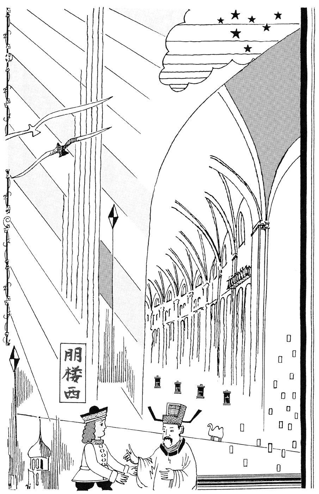
「サイさん、どこの生れです」
「マルコ・ポーロには、弟のようにかわいがられていますが、生れははるか東です。先祖はキリストが誕生した時に参上した、三博士のひとりだそうです」
「高い文明なのでしょうね」
「友人に、不老不死の秘法を研究しているのがいます。不死はなんとかなるのですが、それには山奥で神仙にならなくては。楽しいものじゃ、ありませんね」
「すると、賢者の石など、お持ちでしょうね」
「このような石ですか」
サイ・ポーロは親指の先ほどの、ヒスイの玉を出した。みがかれ、緑色に輝いている。それを右の手に握り、左手に移し、くりかえすうちに、普通の大理石の玉に変る。
たしかめさせ、また左右に移しながら、ヒスイにもどす。南京へ旅した時におぼえた手品だが、みな驚く。
「神秘だ。それを使えば、鉛を金に変えられる。売ってくれませんか」
「こればかりはね。大理石が、ヒスイになる。それを売れば、お金になります。しかし、心のなかでとなえる呪文が、むずかしい。春眠不覚暁 処処聞啼鳥 夜来風雨声 花落知多少」
漢語の発音で言ったので、力ずくで取り上げても無理と知ったようだ。
「すごいものですね」
「まあね。変った人たちは、どのへんにいます」
「スペイン、ポルトガルあたりかな。北をさす針を発明した人もいる」
「要領のいい人みたいだ。父が持ち帰った、指南の針じゃないか。行ってみましょう」
アルノルドという学者がいた。神父や貴族の病気をなおし、城をもらい、教授の地位についていた。金を作るには、原料としてイオウより水銀が適当との論文を書いたばかり。
サイが大麻の葉を進呈すると、効果をみて喜んだ。
「これはいい。で、東洋とは、どんなところですか」
「兄貴のマルコが、本にしましたよ」
「あれは面白かった。ところで、この大地は丸いのだろうか」
「でしょうね。広い野や海を旅すると、そんな感じになりますよ」
「すると、ここから海を西に進めば、あのジパングに行けるのだろうか。錬金術の産業化に成功しているようだ。技術を導入できればなあ」
サイは、あれは私の出まかせですとも言えず、ごまかした。
「この海を越えるのは、危険です。あの島国は、台風を起す術まで知っている。怪しいとなると、追い返されます。元のフビライ帝も、二回も進攻に失敗した」
「進んだ国も、あるのだな。まあ、時どき、遊びに来てくれ」
「はい」
サイ・ポーロはベネチアに戻り、優雅な生活をすごした。木の活字で印刷した本を売れば、金になるのだ。
ある日、町で東洋人を見かけた。
「東の国のかたのようですね。わたしは元から来た。マルコ・ポーロを手伝って、本を出した、サイという者です。困ったことがあったら、相談に乗りますよ」
その青年は、顔をしかめて言った。
「すると、あの本。でたらめを書かれて、迷惑していますよ。ジパング人と言うと、金持ちと思われ、代金をぼられる。どうしてくれます」
「これは、申しわけない。まあ一杯......」
そばのレストランに連れて入り、料理を注文して、酒をすすめて聞いた。
「......しかし、ジパングの人が、ここに来てるとはね」
「大いに、飲ませてもらおうか。大陸には、何人も行ってますよ。少し前には、道元という坊さんが、仏教を学んで帰国した。そんな時、お供がついてゆくのです。主人の修行のあいだ、よそへ足をのばす」
「そうとはね。なにか、埋め合せをしたい。このヒスイの玉でも、あげようか」
「ここベネチアは、ガラスが名産らしい。きれいなガラス玉を、まとめて仕入れたい。玉なら、持ち帰るのに割れにくい」
「お安いご用だ。そうだ、東洋への船を紹介してあげよう。わたしは顔が広い」
ジパング青年は、ガラス玉の入った袋をもらい、東へと出発した。
サイ・ポーロはひまをみては旅に出て、異端の連中と議論をした。こんな提案をしたこともある。
「東洋ではずっと昔、万里の長城を作った。その時から、石の加工職人の秘密の組合があり、城などの弱点や抜け穴を、口から口へと伝えている。身を守る、目に見えぬ力となっている」
「なぜ」
「だれかを迫害したら、仲間が対立者にしゃべるからね。このへんでも、やろう。城、港湾を作る石の職人たちが組合を作れば、教会も王もこわくないぞ。大聖堂だって、急所の石を引き抜けば、つぶすこともできる」
「それは理想です。サイさんは頭がよすぎる。組合など、未来の話です。個人主義の人ばかりで、どうしようもない」
たしかに、ヨーロッパの各国は、内乱や王位争いや、戦いにあけくれている。
「では、地中海の東でとれる、燃える水の利用を考えよう。あれで船を動かせないかな。錬金術より、可能性がありそうだが」
「まあ、空想でやめときなさい。金に困るわけじゃない。のんびりと生きたら」
「そうだな」
アドリア海のそばに別荘を作り、独身のまま、ワインを飲みながら、余生をすごした。
ジパングに帰国した青年は、ガラス玉の一部を足利幕府に献上した。評判となる。どれも、いい値段でさばけた。
南北朝にちなみ、二人が南北に分れ、はじいてぶつけあう遊びがはやった。室町時代の、上流階級が熱中した。ベネチア玉が略され、ビー玉と呼ばれた。ビリヤードやゲートボールの先駆である。
海の若大将
十七世紀のはじめの日本。関が原の戦いで徳川側が優位に立ち、大坂冬の陣で一時的に和解したが、もはや落城は時間の問題。
そのころ、北九州の平戸に、二人の青年がやってきた。年長のほうが、港の役人に言う。
「たのみがある。われわれを、あの外国船に乗せてくれ」
ここにはオランダ船が出入りし、貿易をやっている。役人は、首をかしげた。
「どうやら、豊臣側のかたですな。まずいね。徳川さまは幕府を開いた。あとで文句をつけられたら、困ります」
「そこを、なんとか。ただでとは言わぬ。そっと手を出せ。どうだ。ずしりと重いだろう。それだけの事情があるのだ」
「でしょうね」
「あいつは、秀頼さまの影武者をしていた。大坂城においておくと、まぎらわしい。処分も気の毒。いままでの労にむくいて、南の島の日本人村に逃がしてやりたい」
「やっかいですな」
「いやなら、いまのを返してくれ。徳川の世になったとしたら、このへんの領主も交代だ。外国船は長崎に限るとなるかもしれない。商売の資金の用意が、賢明じゃないかな。わたしは豊臣の忍者頭、有田友治。また、こっちが勝つかもしれないぜ」
「いやおうなしか。夜にまぎれて、小舟で連れてって、船長に話をつけてあげましょう。霧にむせぶ波止場。いい思い出になる。しかし、そこまでですよ」
「わたしも、いくらかは外国の言葉がしゃべれる。なんとかなるだろう」
船に移り、二日後に出航となった。帆に風を受け、西南へと進む。
船長が呼びかけた。
「その若いの、ヒデヨーリさん」
「はーい」
ふしぎがり、船長は友治に聞いた。
「その代役じゃないのか。見たとこ、品もあるし、頭もよさそうだ。武芸も出来そうだ。本物じゃないのか」
「さすが。じつは、そうなんです」
「陣頭に立ち、部下を指揮すれば、徳川の軍に勝てるんじゃないかな」
「その才能は、お持ちです。真田幸村から、戦術の秘伝も習った。しかし、時勢がよくない。城内に統一がなく、母親の淀君は、頭が変になった。実力を発揮しようがない。惜しいと思い、お連れしたのです」
「影武者を残してか。そいつは、どうなる。殺されるぞ」
「徳川方の服を、渡してあります。着がえて、奥方で家康の孫娘、千姫を助け出すふりぐらい、やりますよ。まあ、秀頼さまだって、秀吉さまの幻のようなもの。外国にお連れするのは、その霊に夢を捧げたいからです」
「うまいことを言うな。あの、右にずっとつづく陸が、チャイナだ」
「唐の国ですね。あそこの港には寄らないのですか」
「われわれオランダ人は、大陸より島が好きなんだ。そのうち、ジャワ島につく。領土にし、町を作り、総督がおさめている」
「日本も領土にしたいんでしょう」
「ほかの国も狙っているしね。しかし、国内は戦争つづきなのに、ミカド一族は、なぜか安泰。なぞの国だ。商売だけにしとく」
ジャワにしばらく滞在し、オランダ人の社会で数カ月すごす。会話がかなり上達した。暑いが、スコールがある。
「オランダ屋敷に、雨が降ってる」
「風流じゃ、ありませんな」
そのうち、船は西へと出発。
「代金を払わせて下さい」
と秀頼が申し出る。城から持ち出した、黄金の大判や小判をたずさえているのだ。
「いいってことよ。気の毒な人からは、金は取れぬ。どうだ、船の仕事を手伝ってみないか。いずれ役に立つだろう」
いい船長だ。仕事は面白く、運動にもなり、知識欲をもみたしてくれる。
アフリカの沿岸を進み、南端を回る。港で多くの黒い人を見た。秀頼は聞く。
「あの人たち、優秀なんですか」
「教育しだいだろう。歌、踊り、スポーツの才能があるとの説を聞いたが」
「ヨーロッパは、平和なのですか」
「国や宗教が争って、いつもごたついている。くだらん。陸つづきの国が多いので、あちこちが複雑にからみあう」
オランダの港、アムステルダムに入る。多くの帆船がいて、あたりには石造りの建物が並んでいる。なかなかの壮観。
船長が、迎えの人と話す。
「留守中、なにかあったか」
「景気はよくなってます。そうそう、イギリスではシェークスピアが死に、スペインでは『ドン・キホーテ』を書いたセルバンテスが死んだそうです」
「文芸おとろえ、金銭優先の時代のはじまりか。さびしいが、仕方ないんだろうな」
秀頼と友治は、町を見物したり、この地の食事や酒を楽しんだりした。小判の一枚は、かなり使いでがある。
ある日、訪問者があった。日本人らしい、中年男。
「どなたです」
と聞くと、相手は驚いて言った。
「日本人がいるとの、うわさが本当とは。三十年ほど前、九州のキリシタン大名たちが、ローマ教会へ数名の少年使節を派遣した。ポルトガルの船に乗ってです。わたしは、その随員でしたが、宗教がわからず、抜け出しました」
「ひとりで、よく生きてこれたね」
「十人ほどで、脱走したのですよ。ジプシーという放浪集団がありましてね、その仲間に入って旅をしました。しかし、家畜泥棒や、あの妙な音楽は、好きになれない。ようすがわかったので、いまは日本人だけ」
「集って、今後のことを相談しよう。同じ血をひく兄弟だ」
みながそろうと、代表が言った。
「あなたは、どなたなのです」
「豊臣と言っても、知るまい。羽柴秀吉の子の秀頼だ」
「あの、織田さまの家臣の......」
少年使節の出発は、本能寺の変の前なのだ。
「それから、いろいろあってね......」
有田友治は、適当に説明した。忍者頭なので、話はうまい。だれもが秀頼につくす気になった。
あれこれ話していると、船長がやってきて、秀頼に言った。
「こんなに日本人が集るとはね。みな、わたしが連れてきたと思われている。変なうわさが、ひろまりそうだ。このあたり、人種的偏見が強くてね。少し前に、魔女狩りという野蛮なのがはやった」
「ご迷惑でしょう。なにか案は」
「じつはな。この海を西へ進むと、広い土地がある。わが国も、そこの住民のマンハッタンという族長から、島をひとつ買いとった。貿易の連絡地とするためにね。ニュー・アムステルダムと名づけてある。そこで仕事をしないか」
「そうしましょう。ここで、じろじろ見られる生活も、疲れます」
ふたたび船に乗り、一行はその島へむかった。のちにニューヨークと改称されるが、ただの草原に、いくつかの小屋があるだけ。
「金銀も出ない、こんな土地を買うとは。成り金の国、オランダも、なぞの国だぜ」
そばの川では、魚が釣れた。原住民とごたごたが起ると、交渉をまかされる。ヨーロッパからの移住者より、親近感を抱いてくれる。そんなことで、生活はなんとかなった。
ある日、数十人の日本人が船で流れついた。秀頼も目を丸くする。
「またも、日本人の集団だ。いるものだなあ。日本人のために、世界はあるのか。どこででも会う」
有田友治が、わけを聞き出してきた。
「わかりました。伊達政宗の家中に、支倉常長、通称を六右衛門というのがいて、スペインをめざして、案内されてこの南のメキシコへ来たそうです。そのことは、日本を出る前に聞きました。しかし、西へ進んだわれわれと、東へむかった連中とが、ここで会うとはねえ」
「その脱走者たちか」
「日本からの船には、百五十人ほどが乗り込んで、メキシコへ着いた。支倉は部下を二十人ほど連れて、東のスペインへむかった。あとに何人ぐらい残されたか、おわかりになりますか」
「置きざりか」
「たぶんね。帰るに帰れません。ほとんどが、船大工や漁業の人。何隻か船を作って魚を取っているうちに、風に流されて、ここへ来たそうです。秀頼さまのいるのを知って、喜んでましたよ。運がいいと」
「そうまで、たよられてはね。まあ、集って生活しよう」
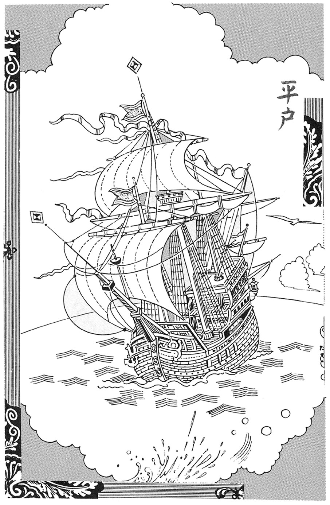
そのうち、オランダの役人が来た。
「また、ふえたな。この島で日本人がさわぐのは、まだ早い。ひとつの方針を考えついた。どうだ、思い切り働いてみないか」
「ありがたい。退屈してました。港のそばに、でかい仏像を作ろうかと相談してたとこです。働くのが好きなんです。われわれは勤勉で勇敢で、頭がよく、仕事をまかせれば、こんな優秀な人種はない。なにをするのです」
「海賊だ。スペインのやつら、この大陸との貿易を独占し、富のすべてをかっさらうつもりでいる。オランダは、イギリスとともに、やつらを妨害したいのだ」
「そういうものですか」
「しかし、どこの船かと判明したら、外交問題となって、やっかいだ。きみたちなら、うまくごまかせる。船や武器は用意する。東洋の海の倭寇の勇名は、とどろいているぞ」
「ひどい話だ。あれは、罪を日本人になすりつけようとした作り話。あなたがただって、ダッチワイフを変な物の名に使われたら、抗議するでしょう」
「で、どうなのだ、やるのか」
「まかせなさい。やると思えば、どこまでも。われわれの実力のほどを見せてやる」
やがて、一隻の船が渡された。
「乗り込め。出発だ」
秀頼は命じ、マストに真田の六文銭の旗をかかげた。航行し、スペイン船に会う。
「あの方法を、ためしてみろ」
ひまにあかせて、鳥を馴らしていた者がいた。鷹匠の子だとか。鳥は相手の船の上で、足につかんでいた包みを落す。
火うち石が、火薬を爆発させ、まわりの布にしませてあった油が燃える。帆船だから、帆を焼けば、こっちのもの。
降参したので、乗員たちを近くの島に追いやり、船と財宝と、若い女性を手に入れる。
「こりゃあ、戦いがいがある」
船がふえれば、戦いも有利になる。メキシコに残っていた仲間も加える。強力な艦隊へと成長した。大義名分も作った。
「この地の宝を、白いやつらに渡しては、神が許さない」
カリブの海を荒しまわった。インディオ海賊の名が高まる。
事情を知るオランダとイギリスも、これはやりすぎと艦隊を派遣したが、いつのまにか消えていた。
「使い方によっては、役に立つ連中だったなあ」
「アフリカから人を連れてくるより、やつらのほうがよく働く。しかし、遠いからな」
バミューダ海域に沈んだとの話もある。また、アマゾンの奥地に黄金をたくわえた、ふしぎな種族がいるとの話も伝わっている。近づこうとしても、コンドルを馴らしているので、すぐ警戒されてしまうともいう。
お寺の昔話
江戸の日本橋に、呉服屋があった。そこに、五歳になる男の子がいた。育ちがいいので、おっとりした性格。
ある日の夕方、近所で遊んでいたはずなのに、消えてしまった。遠くへ行くはずはないし、店の者も注意していたのに。
大さわぎになったが、手がかりはまるでない。奉行所へとどけ、神社やお寺でお祈りをした。
四日目の夕方、見つけたと連れてきてくれた人があった。川にそった道に、ぼんやり立っていたという。空腹でも病気でもなく、着ている物も、そうよごれていない。
「どこへ行っていたのだ」
父親が聞いたが、あいまいな返事。
「よくわかんない。思い出せない」
天狗にさらわれたのかもしれない。そんな説も出た。頭の切れる子より、少し抜けているほうが、天狗の遊び相手には適当だったのだろう。
五日ほどたち、男の子が父親に言った。
「今晩、となりの履物屋さんに、泥棒が入るよ」
「いいかげんなことを、話すな」
「信用しないのなら、いいよ」
「まいったな。ほっとけないし」
隣家に知らせる。いちおう、若い男三人をとまらせ、用心した。夜がふけると、二階の雨戸を音もなくはずし、二人の賊が侵入してきた。
普通なら気づかないが、棒を用意し、注意していた。なぐりつけ、しばりあげる。
「とんでもないやつらだ」
奉行所へ突き出す。評判となり、各所から相談にくる。うちの町内に賊が来るなら、いつでしょう。
人気が高まり、奉行所は困った。神通力とは、世をまどわす存在。念力で盗み心をあおっていると思う人もいよう。とにかく、お上の威信にかかわる。
町奉行は、父親を呼んで申し渡した。町内は仕方ないとして、よそからの依頼は、ことわってくれ。遠くのことは、わからないとして。悪いようにはしない。
町奉行は外出の時、足を伸ばして、その呉服屋へ寄る。そして、男の子から、犯行の予言を聞き出す。おみやげも忘れない。
治安はめっきりよくなり、やがて町奉行は、もっといい地位へと昇進した。義理がたい人物で、男の子が成長して商売をつぐと、幕府へ納入する店の一つに指定した。まとまった取引きで、金払いもいい。
神がかりの能力は、ずっと薄れた。それでも、けっこうなことではないか。
その町のはずれに、一軒の家があった。四十すぎの男がひとりで住み、簡単な宿屋を経営していた。大ぜいは泊められない。ひとり旅の商人などを、客としていた。
近所の料理屋から取り寄せれば、夕食が出せる。酒の用意はある。また、男は夜中に、ひそかにそばの林の奥へと出かける。
死体を捨てに行くのだ。つまり、お客の眠るのを待ち、飛びかかって殺す。金品を奪い、死体は始末。
気づいて、あばれ、反抗する人もいる。しかし、男は力があり、武術の心得もあり、やりそこなうことはなかった。
ある夜、ひとりの若者が泊った。口かずも少なく、食事をすませると、疲れていたのか、早目に眠った。しかし、若いからといって、見のがしてはくれない。
あっけなく殺し、持ち物を調べる。小判を十枚ほど持っていた。上等な印籠も。
「高価そうだぞ。なかは、長旅の疲れを消す薬だろう。飲んでみるか」
口にしてまもなく、胸をかきむしり、床に倒れて息が絶えた。
翌日、料理屋の主人が、これを見つけた。荷物のなかの日記などを読み、いくらかの見当をつけた。
「この若者、父のかたきを討とうと、旅をしていたようだ。強い相手なので、毒で弱らせて殺す作戦も考えていたらしい。悲願だからな。しかし、それが、なぜ......」
荷物の書類などを調べ、つぶやく。
「......そういえば、この宿屋の男も、怪しかったな。過去を話したがらなかったし、力も強かったようだ。かたきと判明し、勝負となったらしいが、相討ちとは......」
代官所にとどけると、葬ってやれと言われた。小判の件はだまっていたので、その一部を使い、塚を二つ作った。
夜になると、それぞれの塚から火の玉が出て、ぶつかり合う。料理屋の主人は、大きな提灯を作り、それをなかに入れてみた。明るくて、目立つ。明月亭と書く。
残りの小判で店を改装し、これを看板がわりにした。珍しがって、お客が来る。
「いい気分で飲めそうだ」
「ホタルの品種改良と、飼育をやりましてね。逃がすと大変なので、いじらないで下さい。この大提灯のように、明朗会計。よろしく」
繁盛がつづいた。主人も、事件のあった日には、坊さんにお経をあげてもらった。三年もすると、火の玉も光が弱まり、役に立たなくなった。無念さだって、永久にはつづかない。
なかをのぞいた子供が、ホタルじゃないと言いふらしたが、提灯をやめたあとのこと。
料理屋の主人のそのごは不明だが、どうなろうと、要領よく生きただろう。
気候のいい地方に、どちらかといえば大きな藩があった。しかし、これといった特色もなく、みな、つつましく生きていた。
城の北のほうに、野原があった。古戦場のせいか、土地の質が悪いのか、農業に利用されていない。中央に、一本の高い木が生えている。
ある日、見回りの役人がさしかかると、青空から石が落ちてきた。木に当り、大きな音とともに、幹を二つに割った。近づいてみると、なかから黄金色の小さな仏像が出てきた。
持ち帰って、領主に報告する。
「これが、その仏像です。わが藩を守ろうと戦い、命を失った武士たちの思いが、木の内部にこのようなものを作らせたのでしょう」
「そうかもしれないな。どう扱ったらいいだろう」
「仏像ですが、この地の守り神というわけです。あの場所にお寺を作り、なかにおさめましょう」
その工事が進められた。割れた木を重要な部分に使い、小さいが形の美しい寺が出来あがった。これを作ったわけは、文と絵とで説明してある。
土地の守護なので、豊作、天災防ぎの祈りにこたえると宣伝した。春と秋に、祭礼をすることとした。領主が酒をふるまった。笛、太鼓、歌、踊りとなる。
翌年から、相撲大会が、それにあわせて催された。領内ばかりでなく、力自慢なら遠くから参加してもいいことにした。
勝ち札なるものも、発売された。優勝者を予想し、的中すると大金がもらえる。また、勝者へは賞金が出る。
他の藩からも見物人が来たし、飲食店も作られた。野原だったから、場所はあるのだ。
冬には、柔道大会が開かれる。勝ち札を売る。勝者だけでなく、派手な動きへは敢闘賞を出したので、見物していて楽しい。
幕府から、調査団が来た。
「武芸大会とは、不穏のようだが」
「とんでもない。刀、槍、弓など、武器は使わせません。なごやかな集りですよ」
「かなり、利益を上げているようだが」
「不正はありません。たちのよくない連中は、追い返しています。お寺のいわれは、ご存知でしょう」
「まあね」
無縁墓地へ案内し、こう話す。
「内密ですがね、お寺の悪口を言うと、命を落します。ここに葬ってますが。死者の霊魂のたたり。天からの石がもとですからね。帰ってから、変な報告をなさらぬよう」
そこで打ち切りとなる。
試合ばかりではと、人形芝居、曲芸などを見せる建物も作った。民謡大会もやる。お客がふえたので、温泉を引く工事もした。
幕府の役人は、よく来る。遊んだ上、みやげをもらって、喜んで帰ってゆく。ほかの藩からも、見学に来る。
寺が作られて十年ほどたった。老職人に若いのが言う。
「にぎやかな土地になりましたね。すっかり変ってしまった」
「福の神だな、あの寺は」
「そもそもが、神秘的ですね」
「さあ、どうかな。わしは、仏壇を作る仕事をした。ご本尊を見ているが、純金ではないし、細工もへただった。ありがたみも、あまりなかった。火薬を仕掛けて、幹を割り、作り上げた話じゃないかな」
「しかし、豊かになりましたよ」
「そう、それでいいのさ」
嵐の翌朝、海岸に妙な魚が打ちあげられていた。二人の男が、話し合う。
「人魚じゃなかろうか」
「いくらか人に似ているが、男か女かもわからん。大きなサンショウウオといった感じだが、海にいるとは聞いたことがない」
逃げないように網に入れ、海水につける。動くので、死んではいないらしい。
領主に、珍しいものをつかまえたと報告。
「そうか。変な生物なら、海へ放って、追っ払ってしまえ。なにかのたたりだとか、前兆だとか、つまらぬうわさになっては、かなわん。領主としての、立場がある」
それに従ったあと、二人はお寺の住職に話した。たたりがあるのかと。住職はこう言った。
「残念なことをした。食べればよかったのに。無病で長生きすると、古い書物にある」
何日かして、また人魚をつかまえた。逃がしてやったので、気を許して戻ってきたのだろう。二人は住職に言う。
「こないだの人魚を、また手に入れましたよ。ごいっしょに、食べましょう」
「戻ってきた同じ人魚だったら、やめたほうがいい。ききめがないのだ」
「つぎの機会を待つわけか。そうめったに、お目にかかれそうにないが」
しかし、何日かすると、夜の海でまた人魚をつかまえた。前のとは、大きさがちがう。二人は料理して食べた。住職に話す。
「昨夜、人魚がとれました。少し小さいから、別物です。アンコウと同じに味つけしましたが、うまいものですね。残りをさしあげましょうか」
「食ってしまったのか」
「いけませんか」
「満月の夜にとったのは、食べてはいけないのだ。もう手おくれだが」
「知らなかった。死にますか」
「死にはしない」
「どうなります」
「たぶん、あくせく働かなくてすむ。食うに困らない。思い悩まないで、のんびり日をすごせる」
「けっこうすぎます。人間として、だめになるわけか」
二人は帰っていった。
しばらくして、住職が海へ行くと、二匹の人魚が泳いできた。なつかしそうなようすだ。住職はつぶやく。
「満月の夜の人魚を食べると、人魚になってしまう。その言い伝えは、本当だった。あの二人が、そうなるとはな。人魚はとるなと、みなに言っておくか。ご領主さまも、そんなお考えなのだし......」
手で、沖へ行くように、あいずをする。
「......元気でな。好きなように、海にただよっていられる。おそらく、長生きの生物だろう。あいつら、うまくやったことになるのだろうな」
お寺の庭に、草が芽を出した。見なれない葉だった。夏になると、美しい花が咲いた。赤と白と黄色で、あざやかだった。
前の年の夏に、南から飛んできた鳥のせいだろう。フンのなかに種があって、ここに根づいた。この土地も、温暖な気候だ。
「きれいですね」
見物に来た近所の商人に言われ、住職は顔をしかめた。
「ここはお寺なのです。似つかわしい花じゃ、ありません。どことなく、なまめかしい。かおりも、強すぎる。僧の修行には、よくありません。抜いて捨てるつもりです」
「そのうち、なれますよ。椿だって、あやしげな感じです。ユリも、かおりが強い」
「そうかもしれませんが、最大の問題は、見物人です。つぎつぎに来て、わあきれいと大声。聞かされるほうは、気が散って、本も読めない。み仏のためにもなりません」
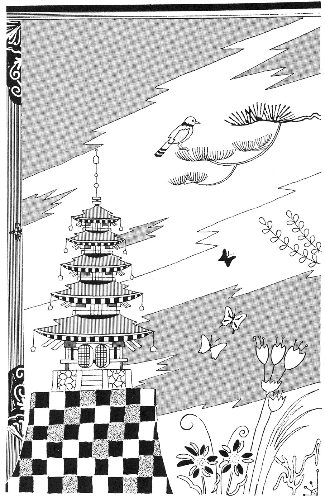
「まあ、待って下さい。わたしにゆずって下さい。かわりに、梅の古木を植えましょう。うちの庭なら、見物に来ても、どうということもない。商売の助けになる」
そのうわさを聞き、ひとりじめはずるいと言う人がふえた。秋に種がとれたら、入札で分配することで、話がついた。
というわけで、花は商人の家の庭に移された。種を手に入れた者は、翌年の春先にまき、夏になると、花が咲いた。多年生の植物なので、商人の家のより、花の数はいくらか少ない。
それでも、美しさは楽しめ、秋になると、種が売れた。お寺の庭にあったら、売買はされなかったろう。
もうかるとわかり、野菜畑の一部で、大がかりに栽培する人も出た。こうなると、見てすばらしいが、そう高くは売れなくなる。
行商に出かけた者もいたが、よそではうまく育たない。気温や雨のせいだろう。食用や薬用にもならなかった。
珍しさもなくなり、ばかばかしくて、ほとんどの人が中止してしまった。見あきたせいもある。風流なところもない。
べつな土地で、三株だけ根づいた。なぜか、花は咲くが、種がならない。
「惜しいな。肥料や雨よけをくふうし、種をならせられないものか」
それに対し、ほかの者が言った。
「やめとけよ。旅先で、これらしい花の話を聞いた。すぐあきるし、つまらないし、人さわがせなものだそうだ。そこでは、育てる人はいなくなったらしい」
「きれいなのにな」
「お寺の墓地に、出現した花だそうだ。なにかあるな。旅をしながら、ぬれば色の白くなる薬を売り歩いたやつじゃないかな。一時的に白くなるが、アザが出来る。うらみが集中して、行き倒れて死んだとか」
「金をもうけ、各地で遊びまわって帰宅すると、自分の娘がアザだらけで、まもなく死んだのかもね」
「美しいのには、注意しなければ。おそろしいことって、世の中には、まだまだあるからな。花をふやすのは、よそう」
人間の無責任な空想力も、かなりおそろしいものかもしれないが。
お寺があり、門の前は道で、両側には店が並んでいた。つまり、門前町だ。
その一軒に、小さなせんべい屋があった。夫婦でやっており、みやげ物にちょうどよく、生活は安定していた。
男の子がうまれ、成長して四歳になった。しかし、気の毒なことに、右足に故障があり、動くのが不自由だった。
もの心つくころから、お寺が好きで、連れていってやると喜んだ。じっとお経を聞いており、住職の法話などにも耳を傾ける。なかなか帰ろうとしない。
「かけまわれないせいだろうが、感心な子だな。少しは、おぼえたかい」
住職に聞かれ、坊やはうなずく。
「うん......」
お経を暗唱してみせた。意味を質問すると、どれにも明白に答えた。驚いた住職は、両親を呼んで事情を話し、相談した。
「頭のいい子だ。修行させれば、この寺をまかせられるかもしれない」
「せんべい屋で、いいのです。足が悪くても作れますし、店で売れますから」
親としては、店をつがせたかった。仏教をひろめる才能があるとも、思えない。
そのうち、坊やは妙なことを言った。
「秋のお彼岸までだよ」
「なんのことだい」
「それからは、仏さまのおそばへ行く」
どうやら、死期のことを言っているらしい。両親は、うろたえた。
「病気とは思えない。足は少し不自由だが、命とは関係ないだろう」
「これも、仏さまの、おぼしめしなの」
冗談だろうと思っていたが、秋の彼岸の日の朝。坊やは寝床のなかで、息が絶えていた。やすらかな死顔だった。
両親はなげき、住職は惜しい子に死なれたと、ていねいに葬ってくれた。
翌年の春の、彼岸の日。せんべい屋の夫婦に、子が生れた。男の子で、足には問題がなかった。両親は子育てに熱中して、前の子のことを忘れようとした。
頭もよかった。お寺でお経を聞こうとはしなかったが、近所の旅館へ出かける。ソロバンに興味を持ち、たちまち使い方を身につけた。金銭の記録のつけ方も。
十五歳をすぎると、朝はやく家を出て、山菜や川の魚を取ってきて、旅館や店に売った。量の多さからみて、安く仕入れてくるらしい。
ひまをみて医師の家へ寄り、薬草の知識をおぼえた。どこかで手に入れ、医師には安く、ほかでは高く売った。
人あたりもよく、少しずつ商売をひろげ、遠い土地の物産も扱うようになった。蔵も建てたし、美人を妻とした。
としをとった両親は、こう言った。
「たびたび、お寺へおまいりしたほうが、いいのじゃないかな」
「ここで商売してるのだから、寄進はしましょう。だけど、いちいち参詣するのはね。とくにお世話になってもいないし。なにか、からだに欠陥でもあったら、そりゃあ、仏さまのお力におすがりし、お願いもするだろうけどさ」
夢20夜
バリエーションを試みて、その真価がわかる。自分で作るほうが楽だ。
その作家が、ある和風の旅館に泊った時のこと。夜中にふと目ざめ、なにかを感じた。寝ている布団の足のほう、部屋のすみに、だれかがすわっている。
うす暗いが、よくわかる。中年の男。畳の上にすわり、小さな机の上に両ひじをつき、むこうをむいている。だれが、なにをしているのだろう。こんな時に。
そう思ったとたん、顔だけふりむく。
「あっ」
親しい友人だった。にっこりと笑った。それにしても、なぜここに。
話しかけようとしたら、その姿は机とともに、うすれて消えてしまった。作家は、いやな気がした。よくある話だ。この瞬間に、彼が死んだとか......。
その旅館には何日か滞在したが、そのような連絡はなかった。都会の自宅へ帰ったが、やはり同じ。気にしなくなってゆく。
ある日、町を歩いていると、その友人と会った。声をかける。
「元気そうだな」
「ええ」
「しばらく、旅館ぐらしをしてたよ」
「構想をねりにですか」
「休養をかねてね」
作家は、そこでの体験を思い出した。あるいは、この友人がその時に、旅館へ行った夢を見たかもしれない。
話しはじめると、友人は目を見開き、青ざめていった。そして、聞き終ると、小声で叫んだ。
「ま、まさか。ああ、やはり......」
からだが硬直し、道に倒れる。あわてて抱き起したが、死んでいた。病院へ運んだが、どうにもならない。
あの友人は、なぜああ言ったのか。それより、旅館でのことを話さなかったら、死ななかったのだろうか。作家は悩み、後悔しつづけることになる......。
という短編が残っている。描写も文章もうまく、妙な印象を残す。私の好きな短編だ。
このあいだ私は、ある旅館に泊った。古く貫録がある。あの短編は、こんなとこが舞台だったのだろうな。
夜中に目ざめると、部屋のすみにすわり、背をむけている男がいる。ついに、夢で見ることになったか。その男は顔をこっちにむけ、笑いかけてきた。
あの作家ではないか。写真で知っている。見つめていると、姿は消えた。夢ではなく、なにかを見たのだ。
その作家は、すでに死んでいる。だれかに話そうにも、身を乗り出して聞いてくれそうにない。ここに書いたところで、なにも起らないだろうな。たぶん。
その男は会社の帰りに、学生時代の友人と出会い、スタンドバーに入ってビールを飲んだ。友人が言う。
「ＵＦＯを見たかい」
「いや」
「それはいかんな。きみは頭もよく、センスもいい。おかしいよ、見てないなんて」
そういうものかと、休暇をとって、山のペンションに宿泊した。少し寒いが、夏なら虫が入るので、窓をあけられないだろう。
夜の空を見あげながら、待つ。最初の夜は、なにも見なかった。二日目の夜、点滅しながら飛ぶものを見たが、飛行機であることはまちがいない。
三日目となると、あせりのような気分が高まってきた。友人の話しぶりは、見ていないと、一段下にされても仕方ない感じだ。
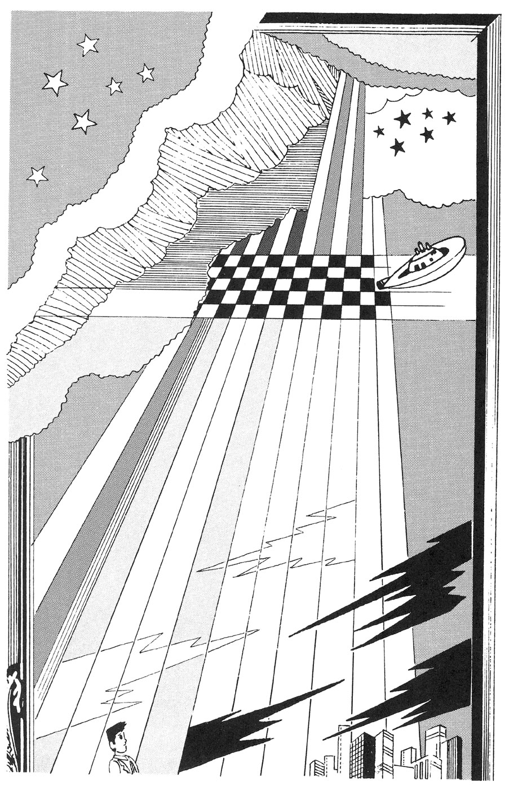
すがすがしい気分になるという。やつは、見ているのだろうな。なぜ、おれには見えないのだ。目撃者も、よくいる。見あげたら、あったという。それなのに、こうやって二晩以上もいるけど、なにも見えない。
悲哀感が、不安に変る。感情がゆれ動き、やがて、持ってゆきどころのない怒りが、こみあげてきた。なぜ、出ない。不当じゃないか。こんなことが、あっていいのか。
見はなされているのだ。気分は安定していない。からだが海に浮いているようであり、ゆれつづける。落下したかと思うと、上昇する。さらに、大きな渦に巻き込まれた。
「出た」
赤く光る点々が、二十ほど、ちらばって動いている。なかなか消えない。朝ちかく、男は眠り、午後に家に帰った。夜になって見あげると、それは同じように空にあった。
会社へ出勤し、男は同僚に言う。
「地球から緑が失われてゆくのは、大問題だと思うんだ」
「賛成だ。その通りだよ」
「このところ、警告の通信が、ＵＦＯから送られてくる。みなに伝えろとね」
同僚の目つきが変った。
「あとの言葉は、よそで話さないほうがいいと思うな」
男の人の背中に、おれはおぶさっている。
「いくつになったのだろう」
聞くと、男が言った。
「六つさ。いい子だよ」
暗くてよくわからないが、男の人は父親のような気がした。甘えたいが、そうしてはいけない思いもする。
「重くはないかい」
「少し重くなったかな」
どこへむかっているのか、おれにはわからなかった。水の流れる音がした。
「どうなるの」
「堤を越えて、下へおりるよ。川原を歩こうと思ってね」
舗装された道とは、感じがちがった。
「重いんじゃないの」
「また、重くなった。おろしたいが、そうもいかない」
口出しのしにくい空気だった。おりたいと言いたいが、声にならない。しだいに重くなっているようだ。父親らしき男は、息をつき、歩くのもゆっくりになった。
「ねえ......」
「なにも言うな。もう少しだ。橋の下をくぐったら、そのあたりだ」
そこで立ち止まった。重さで、歩けなくなったらしい。どうやら、足のほうから、地面にのめり込んでゆく。
おれだけが、そこに立っている。父親の頭から下は、地中に入ったのか見えない。頭に話しかけようと身をかがめたら、石だった。持ち上げようとしたが、いやに重い。
目がさめた。
「ただの夢じゃないな」
おれは甘やかされて子供時代をすごしたせいか、十代の中ごろから、よからぬグループに入った。酔って車を走らせ、橋の上で人をはねた。相手は落ちて即死。
父はその補償のために無理して働き、疲れ、五十歳で死んでしまった。
この夢は、なにかの前兆だろうな。
道ばたの一軒家では、簡単な食事ができた。おかみさんひとりで、営業していた。
白いひげの老人が、ちびちび酒を飲んでいる。昼ごろから、いるのだ。野菜の煮たのを運んできて、おかみさんが聞いた。
「おじいさん、いくつかね」
「わからんな」
「すまいは」
「この箱とでも、しておくか」
古びた箱が、そばにある。ふたをとったが、中はから。酒を少し、たらす。
「思い出にも、なにかあげておこう。心がこもっていれば、なんでもいいのだ」
酒好きなのか、ゆっくりとだが飲みつづけだった。やがて夕方となり、暗くなり、老人は店を出ていった。どっちへ行ったのかは、わからない。
何日かたった。
この庭に、旅の商人が寄った。食事をしながら、おかみさんに話した。
「このあいだ、峠を越えてきて、この前を通って、海ぞいの町へ行った時のことだよ。若者とすれちがった。立ち話をしたが、両親も、家も、仕事もないとか。それで平然としてるんだから、あとで気になったね。ここへは寄らなかったかい。箱をかかえていた」
「来たのは、じいさんだったよ。その人も、箱を持っていた」
「若者は、海岸でひろったと言ってた」
「じいさんは、箱のなかから、サンゴの細工物を出したよ。このぶんだけ、飲ましてくれと。気前がいい。昼ごろから夜まで飲んで、出ていったよ」
「昼ごろねえ。あの若者が箱をあけ、いっぺんに老人となるなんて、ありえないしな」
打ち切ろうとする商人に、おかみさんが言った。
「起ったら、面白いわよ。話をふくらませて、枝や葉をつけましょうよ。サンゴ細工が入ってた。お客も、退屈しのぎで、楽しんでくれるかもしれないし」
「それもそうだな。商売の時、別な土地で聞いた話とすれば、役に立つかもしれない」
スパイであることが発覚し、おれは逮捕されてしまった。取調べ役の、公安部長がそっけなく言った。
「最後の望みは、ないか」
いまや、スパイは選び抜かれた戦士で、待遇も特別にいい。そのかわり、敵につかまれば、ひそかに処刑されてしまう。どこの国でも、そうなのだ。おれは言った。
「恋している女に会いたい」
「朝まで待ってやる。それだけだ」
窓のない一室に、とじこめられた。ドアは内側からあけられない。
同僚の女性のことを、思い出した。そういえば、いい女だったな。スパイであるからには、おれも一芸にひいでている。空想力を強め、その女のことを頭に描いた。きれ長の目で、色が白い。黒っぽい服が、よく似合う。
こんな場合なのだ。面会に来てくれてもいいだろう。いいワインと、いいチーズを持って、楽しい会話をしに。そう何度もあることではない。
さあ、ベッドから出て、服を着て、適当に化粧をし、車を動かし、ここへ来てくれ。朝になる前に。時計を取り上げられているので、時刻はわからない。
そろそろ、このビルの前についたかな。美人なのだから、守衛だの、係だのをだますのは簡単だ。だれも彼女を見て、われを忘れる。そのなかを通って。
ドアがあけられた。
彼女が入ってきた。おれはほっとし、そとへ出た。うしろで、ドアがしまった。
彼女を見たせいだろう。そのへんの連中は、ぼんやりしている。車はそとにあった。キーがわりの番号を合わせる。少し走らせた時、空が明るくなり、高いビルの上に朝の光が当った。
おれのことを敵に通報したのは、彼女だったのではないか。
うわさを聞いて出かけると、美術館の庭で、左甚五郎の子孫という男が、なにかをはじめかけていた。そばに解説者がいて、話している。
台の上の四角く黒いものは、ヨウカン。大きさは氷柱と、ほぼ同じ。ホテルの料理人は氷の彫刻を作るが、左先生は、ヨウカンのなかにペンギンを作る。
その方法ですね。これにむけて「気」を送るのです。道教思想にあります。生命エネルギーのあらわれです。強力な電磁波と思っていただけば、大きな差はない。
首をかしげたかたも、電気ウナギはご存知でしょう。人間も、素質があり修行をつめば可能となる。素質だけで軽々しくやり、からだが発火し、燃えてしまった人もある。
あのなかで、いまホログラフィーが形成されている。立体映像のことですね。じかにお見せもできますが、それなら、すでにごらんのかたもおいででしょう。
ヨウカンの内部にペンギンの像が出来、その部分が、熱をおびて、とけているのです。台の下の容器に、流れてきました。オシルコです。飲みたいかたは、どうぞ。
流れ出るのが、終ったようです。ヨウカンの上下を逆にし、穴から液状のプラスチックを流し込みます。すぐにかたまりますよ。
あとは、ヨウカンをはがせばいい。職人さんに、おまかせしましょう。あしたも、実演するので、そのためにとっておく。
水で洗って、ほら、ペンギンの像。
みごとでしょう。生きているようだ。あしたのは、少し姿勢が変ります。いずれ、この館内に並べます。ほかに、やれる人はいませんね。素質、修行、芸術的才能の、集大成です。
テレビでは、見られません。その「気」の力が強く、画像が乱れるのです。
一段落したので、解説の人に言った。
「すごい、マジック。ヨウカンとはね」
「ね。芸術と呼ぼうが、演出と呼ぼうが、すなおに感心していただければ、それでいいのです」
まったくだ。あれをやった男は、天才なのだろう。
乗っている船が、どこへ進んでいるのか、わからない。二本マストの帆船。東と西はわかるが、船長がいいかげんなのか、気のせいなのか、方角が一定しないようだ。
なぜか、右側にいつも虹が出ている。乗客も船員も、外国人ばかり。言っていることはわかるが、シャレがわからない。みなは、話すたびに笑っている。しだいに悲しくなり、孤独感にとらわれてしまう。
バーへ行って、酒を注文した。なにかを言ったら、バーテンは大笑いした。面白いことを口にしたつもりはないのに。
甲板へ出て、夜の空を見ていた。外人客がそばへ来て、星座を知っているかと聞く。関心がなく、おぼえる機会もなかった。その男は、さらに言った。
「あそこの、明るく光る、ゆれているような星。あの位置でとなると、きわめて珍しいことです」
「どうなります」
「とんでもないことが起ります。胸がときめきますねえ」
そして、どこかへ行ってしまった。しかし、みなの感覚とは、ずれているのだ。期待しないほうがいい。なにか起っても、ひとりだけべつでは、つまらない。これ以上、船にいても楽しくない。
死んだほうが、ましか。つぎの日の夜、海へ飛び込んだ。水に浮き、これは夢かもしれないと思った。早まったかな。
本能的に泳ぐ。すぐに目ざめるのだろうな。遠ざかってゆく船体に書かれた、その名だけが目に残る。マリー・セレスト号。
山のふもとの、その一軒の家は大きかった。古いが立派で、貫録があった。部屋は二十以上もある。どの部屋も柱が太く、一種の美術品といえた。
中年の男がやってきて、門のそばの小さな建物を訪れ、そこに住む青年に名刺を渡してあいさつした。
「話を耳にし、来ました。豪華ですね。コンサルタントの仕事をしておる者です」
「なかを、ごらんになりますか」
「のちほどね。それより、うわさは本当なのでしょうね」
「ええ。金と力のある支配者。非情な行為。のろわれた家系。条件はそろってますよ。腰元を殺した部屋、浮気な夫人を殺した部屋、うるさい父を毒殺した部屋......」
「それぞれ、出るんですか」
「この土地は、霊気を保つ力が強いようだ。蓄電池のようなものですね」
「あなたも、その一族でしょう」
「最後のひとりの、養子です。あの家で寝なければ、無事です。家を相続できたが、掃除や手入れが大変。といって、とりこわしたら、たたられそうだ」
「そこで、利用法のご相談に......」
「何人も、みえましたよ。ゴースト・ランドの計画でしょう。オカルト趣味でも、あれはいけません。血みどろで、うらめしやですからね。楽しさがない」
「迫力は、あるんでしょう」
「だから、なおいけない。ひどすぎる、やめた、金をかえせです。あなたも、買いかぶっている。そっくり進呈しましょうか」
「うまく活用するのが、腕の見せどころです。お話だと、適当のようだ」
「なんに使うのです」
「現代病ともいえる、アル中の治療。ベッドに固定し、部屋に入れる。アル中の幻覚が出てくる」
「どんなものが......」
「しれてますよ。クモとかヘビとか、ピンクの象とか。ここの怨霊の前では、かすんでしまうでしょう。幻覚が薄れたあと、運び出す。霊もそこまでは追ってこないでしょう」
「アイデアですな。印象が強すぎて、酒はいやだとなるかもしれない」
二人は営業を開始した。医師や看護婦など、白衣姿の人たちを見かけるようになった。効果があり、回転もいい。家族や社会のためでもある。うわさがひろまり、患者はたえない。競争者も出ようがない。
これまでのところ、たたりはない。
社会の裏で、なにかが起ったらしい。
どうやら、情報は操作されている。テレビのニュースも、感情に訴えるのが大部分になった。立腹や悲しみの気分にさせる。
それでいて、なにがどうなのかは理解できない。だから、飽きることもない。
その家庭は、亭主は四十五、妻は三十五、晩婚なので、ひとり娘は三歳。
ある夜、亭主は電話を受け、カバンを手に、なにも言わずに出ていった。連絡もない。
「パパは、どこにいるんでしょう」
妻がつぶやくと、娘は言う。
「あっち」
銀行口座には、変りなく振り込みがある。
妻は時たま、繁華街へ出る。店を出している占い師や、祈祷師がふえたようだ。男の客もおり、話してみると、子供がなく妻の帰りを待っているのだそうだ。
幼い娘は、どこからか、おまじないの言葉をおぼえてきて、となえる。
「する、する、さあ。する、する、さあ」
テレビでも、超能力がはやっている。おかたいのや、科学的な番組はやらない。見てもらいたいなら、感覚的に作らなくては。
娘のとなえる、おまじないの回数がふえた。いかにも効きそうだ。
ある日の夕方、亭主が帰ってきた。疲れたようすもない。妻が迎える。
「どこへ行っていたの」
「あっちさ」
専門が分化した時代。くわしい説明は、聞いたところで理解できない。内戦も、霊界も、飢餓地帯も、異次元も、犯罪組織も、テレビがすべてぼかしてしまった。
夕食を作る。食べる亭主に、妻が聞く。
「左ききになったの」
「与えられた装置が、こうしたほうが扱いやすかったのでね。右に戻そうか」
「どっちでもいいわよ」
どこか変だが、どこだろうか。
その青年は、顔つきもスタイルもよく、自分でもそれを知っていた。私鉄の駅のそばの、花の店につとめていた。いずれチャンスにめぐまれ、いい目に会うだろうと、なんとなく思っていた。
「いらっしゃいませ」
いつも花を買ってくれる、女の客だ。とどけるため、ついていったこともある。事情はわからないが、しゃれた家に住んでいる。少し年上で、なにを考えているのかわからない美しい人。生活には困らないらしい。
「胸につけるランを、いただくわ」
「会合ですか。楽しいでしょうね」
「近いうち、ごいっしょにどう」
と言われ、青年は短く叫んだ。
「本当ですか。夢のようだ」
「興奮すること、ないわよ。薬があったわ。これで、こわいものなしよ」
女は金を払い、カプセル入りの薬を渡し、出ていった。とにかく、これを飲もう。早いほうがいいだろう。
閉店の時間になり、マンションの小さな部屋に帰る。ひとりでいると、かすかな物音がした。そっちを見て、驚く。
「いかん。これだけは苦手だ」
玄関のドアの郵便受けを抜けて、ゴキブリが何匹も入ってくる。十匹ぐらいだが、さらにふえるだろう。こっちへ進んでくる。
たたくのに適当な品が、そばになかった。追い払う動作をしても、寄ってくる。足をのぼりはじめたので、ふるえあがった。
あの薬のせいか。これで平気でいられれば、こわいものなしだろうが。
首から顔に何匹か来た時には、皮膚の神経がさざ波を打ち、思考はほとんど停止した。さらに、口のなかにもぐりこむ......。
とぎれなく、つづくのだろう。生存と正気を保つためには、このへんで気を失う以外にない。うすれる意識のなかで、ぼんやりと感じた。あした、朝おきてみると、巨大な虫に変身しているのだろうな。
週末ちかい日。その男はバッグを持ち、家を出た。駅で新聞を買おうとしたが、売り切れで、その日に発売の雑誌を買った。
車内で開いたが、論文や解説で、つまらない。後悔していると、色のうすいサングラスの若い男が、ささやいた。
「珍しい雑誌を、お読みですね」
「買うものじゃありませんな」
「そうでしょうとも。お仕事、ごくろうさまです。ご案内いたします」
出勤先の駅より、三つ手前でおろされた。ビルのなかの事務所には、目つきの鋭い連中がいて、年長のが声をかけてきた。
「雑誌、ネクタイの柄、連絡どおりだ。金の入ったバッグを渡してもらおう」
「なかは、下着のたぐいですよ」
「とぼけるな」
さんざん、なぐられた。大金を運ぶ役のだれかと、人ちがいされたらしい。この弁解は容易じゃない。証明書や定期券など、通用しない世界だ。息もたえだえになり、地下室にほうり込まれた。
つぎの日になり、本物が出現したらしく、解放された。ふらふら歩いていると、話しかける人がいた。
「大変でしたね。いい休息所を知っていますよ。どうぞ」
「ほっといてもらいたいね」
「そうはいきません」
警戒厳重な室内で、あそこの内情をしゃべれと迫られた。正直に話すと、なぐられた。信用しないのか、礼金は払うぞと。
最初に案内された組織に潜入した、一匹狼がいたらしい。発覚してたたき出されたのなら、対立するこちらに、情報を売れということらしい。
電気拷問器などで、一晩がかりで痛めつけられた。こうまでされて話さないのは、知らないからかと判定されるまで。
道ばたでぐったりしていると、警察へ連行された。挙動不審で。ありのままを話すと、夢のようなことを言うなだ。
眠らされず、交代で調べられた。やっと疑いが晴れ、パトカーで帰宅できた。
「なんということだ。週末の休みに静かな温泉地へ行き、のんびりするつもりだったのに」
なにげなくテレビをつけると、ニュース。予約し、宿泊するはずだった旅館は、昨夜おそく火災で全焼。木造のため、ほとんどのお客は逃げられず死亡と。
その青年が、夜ひとりで眠っていると、上から胸を押された。相手は若い女性らしいが、楽しい気分ではない。照明をつけようにも、からだが動かない。
つぎの夜、かすかに明るくしておいたら、なにごともない。暗くしたら、出るのだろうが。
うつぶせなら、どうだろう。やってみると、夜中に背中を押された。指圧に似ていて、悪い感じではない。
朝になると、すがすがしい。悩みも消えていた。これをくりかえすうち、頭が冴えて、勘も鋭くなったようだ。そのうち、夜中に女の声を聞いた。
「順調に、仕上ってるわ」
「会話に成功か。テレパシーによってのようだな」
「そう。超能力がそなわってきたのよ」
「ありがたい。ひとかせぎできる」
と喜ぶ青年を、女は制した。
「急にそなわった力を、いいかげんに使うのは危険よ。いい人を紹介するわ。しばらく、そこで仕事の見習いをしたら......」
告げられた家を訪れると、老人がいた。内外の美術品にかこまれ、豪華な生活。青年を見て言う。
「たのもしい。ここで生活しないか。適当な個室もあるし、好きな料理も作らせる」
資産家らしい。その上、なにを望むのか。滞在して、ようすがわかる。どうやら、対外情報活動を受け持っているらしい。対立国には、どんな才能の持ち主がいるのだろう。
「冒険か。金では買えないスリルだな」
青年は、期待に胸をおどらすのだった。
「あら。そこで話は終りなの。指圧をした女と、老人の関係はどうなの」
と女の客は不満だった。
「青年から、じかにお聞き下さい」
「どこでよ」
「このホテルの、特別料金のシークレット・ルーム。大金を払って、ゴーストハンターから手に入れました。この業界、競争が激しいのでね。ご満足いただけると思いますよ。テレパシーは、録音できなくていい。ご本人も、話し好きでしてね」
公園のベンチに、老人がかけていた。目の鋭い、子分を連れた男が来て、声をかけた。
「あなたかね、電話をくれたのは」
「そうだよ」
「白い粉があるそうだが、ほんとかね」
「このカバンのなかさ。薬局は店じまい。老後を楽しもうと、自分で作ったのだ」
「ちょっと、さわらせてもらうよ」
子分が老人の服にさわり、カバンを持ってみて、報告した。
「金属製のものは、ありませんね」
そのあと、老人が男に言う。
「お金をいただき、このなかの品を渡せばすむわけだが、ここではまずいね」
「そりゃあ、そうだ。近くのホテルに、部屋をとってある。歩いてゆくか」
「お供を連れてじゃ、目立って変だろう」
「もっともだ。帰してしまうよ」
二人だけで、ホテルの小さな部屋に入る。老人は、浴室のトイレのそばに立って言う。
「金はあるんだろうな。奪おうとしたら、ここへ流しちゃうよ」
カバンのなかから、白い粉の入った袋を、いくつか出して見せた。男はうなずく。
「わかった。役に立つ才能の人は、大事にするよ。金は用意してきた」
男のカバンのなかには、札束があった。老人は、それをのぞいた。
「すごいな」
「一袋だけ、渡してくれ。品物を調べたいのだ」
「取引きだから、むりもない」
老人は一袋を投げた。男は封を切る。
「きれいな結晶だな」
「名人芸だよ。仕上りがよくなくては」
男はなれた手つきで、粉を少しつまみ、舌の上にのせた。短く叫び、胸をかきむしり、倒れ、息が絶えた。
「その袋の残りは、持って帰るか。来た刑事が、ふとなめると、ことだし。不注意な人間が、ふえてるからなあ」
「おだやかな景色ですね」
と聞くと、三十歳ぐらいの案内役の男が、そばの碑を指さした。
春なれや名もなき山の
朝がすみ
芭蕉
そう彫ってあった。案内役は言う。
「あの山ですよ。美しすぎず、変な迫力もなく、親しみやすい印象でしょう」
「道ばたには、小さな花が咲いてるね」
「よく、あるでしょう。名もなき花が咲いていたという文章が。それですよ」
「わたしはね、ここへ取材に来たのですよ。友人にたのまれてね。広く紹介をと。金になるならと、やってきた」
「よろしく、お願いします」
「だったら、花の名前も、軽く扱うなよ。花だって、悲しむぜ」
「飛躍しないで下さい。それが名前です。ナモナキ科の、ナモナキという草です。わざわざ新しい技術で作った、品種なのです」
「なんだと、ユニークな発想だな。すると、あの山は」
「ナモナキ山と名づけたのです」
「芭蕉とは、関係なしか」
「調べると、説明はつくのです。おれの言うことに、文句があるのですか」
べつに、口論はしたくない。
「あなたの研究とは、知りませんでした」
「ちがいますよ。ここの町長の苗字が、俺なのです。この観光宣伝の、原点でしょうね。奥さんも、いい人です」
「そのかたは、助役ですか」
「いえ、町長の夫人のことですよ」
「ふうん。で、この道の名は」
と聞くと、そばの立札を示された。
〈いつかきた道〉
「歩きながら、歌いたくなるでしょう」
「なるほどね」
「もう少し行くと、茶店がありますよ。中年の女性がいて、おふくろさんです」
「それが名前か」
「いえ、職業名です。このへんでだけですけどね。ダンゴまんじゅうを売っています。まんじゅうの小さいのを、串に刺したもの。ここの名産です」
「考えたね」
「話題にしてもらいたい、一心からです。なんとか、なりませんか」
「笑い感覚も、ひろがってはいるがね。名前負けかな。テレビの旅番組で、とりあげさせたいね」
「たのみます。テレビになったら、特別謝礼を、おれが出しますよ」
その身なりのいい紳士たちのグループは、この地下室で、定期的に秘密の会合を催す。
発覚すれば重罪というものではないが、他人には話さないほうが賢明と、だれもが知っていた。
「では、第一の組の戦い。お賭けになるかたは、どうぞ」
四角いオリのなかに、二匹のネズミがはなたれた。ある薬品を注射してあり、一方が死ぬまで決闘がつづく。
「まったく、すさまじいな。見ていて、飽きることがない」
血まみれになり、かみつきあう。闘鶏のように、あっさりしたものではない。
「日ごろのストレスが、消えてゆく」
賭けなくても、充分に面白い。だから、問題にされるほどの金が動くこともない。心のもやもやが、飛び去ってしまう。
十組の試合が終ると、死んだ十匹が残る。それを料理し、食べるのだ。注射した薬は、加熱により分解し、作用は消えている。
闘牛で殺された牛の肉も、見物人たちが買って帰り、食べる。人間には、そんな一面があるのだろう。
赤ワインを飲みながら、だれかが言う。
「ちょうどいいというか、ふとったのが弱いようだな」
「動作が、にぶくなるせいでしょう」
小さすぎては、若いためか、負けやすい。なにか微妙な差があるようだ。
「このごろは、どこから手に入れている」
「ある食料不足の国からです。援助しているのに、あまり役に立たず、餓死者がたえない。死体は、穴にほうりこむ。その近くでつかまえるネズミは、大きいんです。人間は飢えて、やせているのに」
「食わないのは、宗教上のタブーかな」
「でしょうね。つかまえてきた者には、金を払う。当人の食料代になる。運び出す時の検疫や消毒は万全ですから、その点はご安心を」
「会員をふやす話は」
「これで、いいんじゃないの。生物のランクづけが、不安定な時代だし」
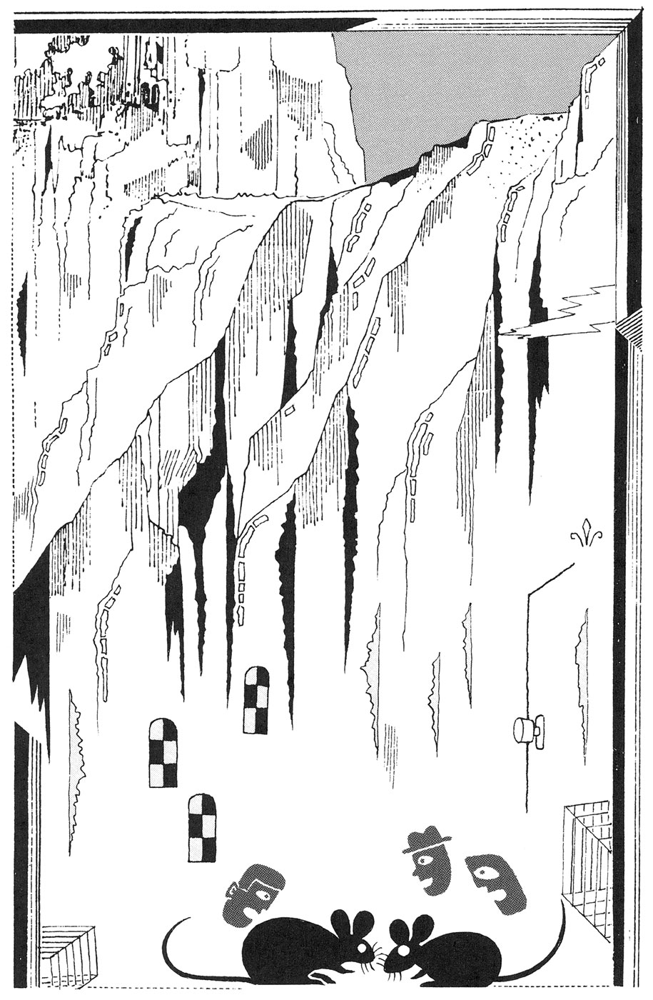
その青年は、ハイキングが好きだった。ある時、林のなかで、ひと休みした。うとうとして、夢のなかで声を聞いた。
「これも、なにかの縁だ。当分は、このへんで眠ってくれる人はないだろう。そばの丸い石の下を、掘ってみろ。わしは福の神だ」
目ざめ、ためしにと掘ると、小さな像が出てきた。川の水で洗うと、銅製のためか、さびていない。しかし、どうにも妙な顔だ。意味ありげに笑っている。
持ち帰って、部屋のすみに置く。どう、ごりやくがあるのだろう。声が頭のなかに伝わってきた。
「ようすを見るに、株というものでもうけるのが簡単らしい時代だ。買ってみろ......」
ある銘柄を告げられ、それを買う。まもなく値上りし、声の指示で売った。
「おかげさまで、利益が出ました」
「どうだ。おまえのように女性にもてないやつも、金を使えば、なんとかなる。一時的にだがね」
「はあ」
その通りなので、文句も言えない。金がつきると、またも声がもうけさせてくれた。
「なあ、ぬれ手に粟だ。なんに使うか。連日、高級料理を楽しむか。ただし、ためようなど、考えるなよ。福の神の性格だ。貧乏めいたことは、好かんのだ。わしがついている。安心しろ」
食い飽き、太りかけたのが気になるころ、金がつきた。声の指示で、またも金が入る。
「ありがたいだろう。汗もかかず、くたびれもせずにだ。頭が悪くても、わしのおかげで、こうなる。別荘を持とうなど、考えるなよ。土地だけなら、値上りさせてやるが」
「いけませんか」
「金を使いにくいからな。豪華な旅館を借りきり、友人を呼んでさわぐのならいい。いかに金を持っていても、使わなければ、福でもなければ、富でもない」
「ギャンブルは」
「手伝うよ。勝つとわかっていて、面白さが、どれくらいつづくかな。あまり考えるな。夜を待って、盛り場へ行き、景気よく遊ぶのだ」
しかけが、わかってきた。もうかるが、金はたまらない。こんなことをしていたら、どうかなってしまう。
だれかに渡すのも、しゃくだ。青年は像を持ち、あまり人の行きそうもない、林のなかに埋めた。目印に四角い石を置く。
「若い者には、害がある。修行をし、平然と使いこなせるようになったら、また掘り出すとしよう」
それは、どんな人間になった時か。はたして、その日は来るのだろうか。
それとも、来週にもか。
社員が上役に言われた。
「きみの家の庭には、桜の木があったな」
「ええ、小さいけど」
「カワリ虫の卵をあげよう。変態に特色がある。これが、育て方を書いた紙だ」
金色をした粒だった。花が散ったころ、幹の根元に水の入った杯をおき、卵を入れた。やがて、オタマジャクシのようなものが生れ、赤い毛虫のような形になって、桜の葉を食べはじめた。
鳥に食われないかと、観察する。外側が堅い殻になっていた。どう成長するのかと思ったら、脱皮をした。ダイダイ色になる。
虹の七色の脱皮をくりかえしたあと、白くなり、サナギを作った。なにが出てくるかと待つうち、水玉模様の大きなチョウが出て、飛んでいった。くれた人に話す。
「チョウになって、行ってしまいました」
「書き忘れていた。必ず戻ってくるから、安心しろ。あれも異性と会いたいだろうしね。クモも食べなくてはならない」
夏に入ったころ、チョウは戻ってきた。力なく羽根をばたつかせ、葉にとまっている。やがて、地面に落ちて死んだ。
「土をかけてやれと、書いてあるな」
そうすると、十日ほどで芽が出た。三十センチぐらいの高さになり、黒い花をつけた。受粉する必要がないから、地味なのか。
サヤの形の実がなった。雨が降り、葉っぱはとけて流れ、サヤだけが残った。なかには、金色の粒が合計して三つあった。
それを持って、報告をする。
「一段落のようです。卵が三つとれました。おかえしに来ました」
「もう、あきたか」
「それより、チマチマ変って、あわただしい。趣味に合いません。夢もロマンもない」
「すると、どんな生物が好きなのか」
「渡り鳥ですね。すごいのになると、北極圏から南極圏まで飛ぶのがある。そんなのがいるなんて、自然界の驚異ですよ」
その青年は、いい感覚の持ち主だった。
ファッション関係の小さな会社を作ったが、運営費が不足。むかし知りあった、資産家を訪問した。
「金銭的な応援をお願いします。こういう物を作るのですが」
各種の品のデザインを見せた。相手は、うなずいた。
「才能があるな。採算がとれそうだ。金を貸すから、契約書を作ってくれ」
「ありがとうございます。では、さっそく」
「あと、条件ではないが、中年の男をひとり、やとってくれぬか。総務課の雑用でもやらせるといい」
「はい。お引き受けしましょう」
融資の話の時なので、いやとは言えなかった。やってきた中年男は、背が低く、ふとりぎみで、にこやかな人物だった。頭が切れそうには見えない。
会社は、事業をはじめた。生産を開始し、問屋に卸す。繁華街に直営店を出し、話題となり、人気も出た。資産家に見込まれた通り、利益をあげた。
急成長で伸び、借金は予定より早目に返済してしまった。これからは、自己の資金で拡大できるし、銀行の信用もついた。
ふと気がつくと、中年男はまだ勤めていた。もはや、義理もない。青年は総務部長を呼んで、そっと聞いた。
「あの中年男は、働き者か」
「人あたりがよく、害にはなりませんが、とくに優秀でも......」
「では、やめてもらうか。活気のある若い者のほうが、わが社にふさわしい」
それを境に、すごみのある男たちが、なにかと会社に来るようになった。粗悪品をつかまされたの、うちの類似品を作ったの、社員のスキャンダルだの、いいがかりをつけ、金をせびってゆく。
会社の車の不法駐車で、バーの売り上げが落ちたとの文句もあった。総務部長は、応対した。
「事実のようです。お払いしましょう」
「そうですよ。景気がいいのですから、お払いになるのがいい」
「ひとつ、教えてくれませんか。このところ、なぜかごたつきが多くなった」
「気づかないのですか。これまでは、あの人がいましたからね。こわくて、顔を出せなかった」
「あの、にこやかな中年男のことか」
「あなたがたには、そうでしょう。しかし、外部の者にとって、あの目は恐しかった。魔力の目というものでしょうね」
社長の青年は、資産家を訪れた。
「あの男を、また雇いたいのですが」
「いま、新しい融資先にいるよ。わたしがこうなれたのも、それなりの事情があってだ」
バーで四十五歳ぐらいの男が、となりの客に話しかけた。胸にしまっておけなくなったといった口調で。
ちょっと、聞いて下さい。あれは就職してまもなくのころだった。朝おきると、かなりの熱で、立ち上る元気もない。会社に欠勤の電話をし、横になったままだった。
その時、彼女が来たんです。頭をひやしてくれ、薬を飲ませてくれ、食事を作ってくれ、汗のにじんだパジャマを洗ってくれ、着がえさせてくれた。眠ることなく、看病してくれた。
美人でしたし、献身的だった。夢のような気持ちでしたよ。よくなったら、どう感謝の意を示そうかと、考えつづけだった。その空想はとめどなくひろがり、楽しいものでした。
四日ほどして、熱が下った。眠りからさめると、その女性はいない。買物かと思って待ったが、それきりなんです。
会社へ出勤して聞いたが、そこまでの社員サービスはしていないとのこと。近所の薬局などで聞いたが、だれも知らない。なにかの勧誘に来るかと思ったが、姿を見せない。名前すら知らないのだから、どうしようもない。
そして、現在になってしまいました。いつか会えるだろうと、独身のまま、十五年がたった。会社をやめて独立し、金まわりもいい。もう少し待ってみるかな。
こんなことって、ありえますか。
となりの客は、うなずいた。
「わたしはね、信じますよ。あの女のしわざだ。困っている若い男を、なぐさめる。そして、思い出という影だけを残し、消えるのです。男のほうは、結婚もできない。金はたまるが、ぜいたくに使えない。つまらない人生を、たどるのです」
「本当ですか」
「男たちの思念の作用で、いつまでも若いまま。困ったものです。防ぎたいけど、これだけは、わたしの手におえない。残念ながら」
それを聞き、男はうなだれて帰っていった。
つぎの日、バーへ来て、店の人や知りあいの客に聞いた。
「きのう、話し相手になってくれた人、どなただったでしょう」
「さあ、そんな人、いたかなあ」
だれも、否定的な返事。その時、顔みしりといった程度のお客が、話しかけてきた。
「なにか、お悩みのようですね。お話しになってみませんか」
「いや、やめておきましょう。そのほうが賢明のようですから」
上部のくもりガラスから光が入るだけで、そとを眺めることは、できなかった。ここは囚人収容のための部屋なのだ。
十メートル四方ぐらいの広さで、鉄の格子で二つに区切られていた。それぞれに、ひとりずつ男が入れられていた。
生活可能な設備はある。細い蛇口があって、ジュース状の食品が出る。金属のコップで、一日に二杯も飲めば充分だった。まずくはないが、うまくもない。
「ここに入れられて、何年になるかな」
ひとりが言い、もうひとりが応じた。
「かなりになるな。忘れるぐらい、古いことさ」
「それにしては、あんた、変らないね」
「そちらもさ。規則ただしい日常のおかげだろうな。電球のないのもいい。暗くなれば眠り、明るくなったら起きる」
「おたがい、病気もしないな」
「気候がいいからかもしれない。ここは、どの地方なのかな」
「さあ。この格子は、なんのためだ」
「囚人なのを忘れさせないためかな。おかげで、壁のあるわけがわかる」
たあいない会話だった。
「ここを出たら、どうするつもりだ」
「わからん。考えたこともない。こんな毎日では、出たとしても、現実にうまく適応できないのではないかな」
「たまに思うんだが、もしかしたら......」
「なにか、変なことを言いそうだね」
「そうなるな」
「口に出してみろよ」
うながされて、言う。
「おれたちの死刑、ずっと前にすんでしまっているんじゃないかな」
「ううん、そうかもしれない。過去の記憶も消え、未来も気にならず、現在を悩みもしない。だれかがのぞいても、おれたちを見ることは、ないのじゃないかな」
「あるいは、この小屋そのものもね」
ささやかれた物語
壺
ある地方の領主。その城の庭に、何本もの松の木が植えてあった。
その年、なんということもなく春が過ぎ、ある初夏の夕方、それぞれの松の木に蛇がのぼり、枝から首をさしのべるような姿を示した。あまりのことに一同それを見つめた。
くらべてみると、どれもが地面の一カ所にむかっているようだ。領主が命じた。
「あそこを掘ってみよ」
小さな石があり、それをどけて掘ると、なにかが出てきた。家臣が言う。
「壺がありました」
「あけてみよ」
「大丈夫でしょうか」
「そのまま、もとどおりに埋めては、気になってならないだろう」
「さようでございます」
ためらいながら、作業にかかる。ふたがしてあった。細くなった口の部分に、小さな皿が当ててある。ノリのようなもので、くっつけてあった。なんとか、はずすことに成功。
とたんに、邪気といった感じの、黒っぽい煙が立ちのぼり、空中へ散った。よからぬことを、してしまったのではないか。
その秋から数年、凶作がつづいた。
家臣にも領民にも、死ぬ者が出た。草や虫まで食べた。生きようとする気力がなく、努力しない者は、消えてゆく。
かくして、精鋭だけが残った。心身ともに強い者たち。領主が言った。
「隣国へ攻め込もう。いいも悪いもない。ほかに思いつかない。神だって、お許しになるだろう」
だれも、うなずく。蔵のなかには、食べようがないので、武器だけが残っていた。領民の若者も加わり、出陣となる。
その強力なこと、むかうところ敵なし。空腹で死ぬか、戦って死ぬかだ。隣国どころか、かなり広い地域を支配下に置いた。
こうなると、飢えるどころか、好きなものを好きなだけ食える。酒だって、飲みほうだい。ぜいたくもできる。
しかし、年月がたつと、国は乱れ、支配力も弱まり、反乱が起った。三代目の若い領主は、城から追い出された。つまり、全盛期の勢いは、衰えてしまったのだ。
似たようなことは、よくあるだろう。三代目が城を去る時、身の不運を壺のなかに語り、埋めたかもしれない。しかし、そう終らせては、よくできた話になってしまう。
川
ひとりの農民が、ある晴れた春のお昼ごろ、川岸に腰をおろしていた。
川上から、刷毛が流れてきた。ゴミを払うか、なにかを塗る用具だ。いらなくなったので、だれかが捨てたのだろうか。
つぎに、ノミが流れてきた。刃の部分は水のなかだが、きれいな流れなので、それとわかった。
つづいて、少し大きなノミが流れてきた。マキのような木片の、なかほどのくぼみの上にのっていた。
「ふしぎな物が、流れてゆくなあ」
やがて、簡単な板の上にのせられ、ナタが流れてきた。さっきの木片は、このナタで作ったのだろうか。
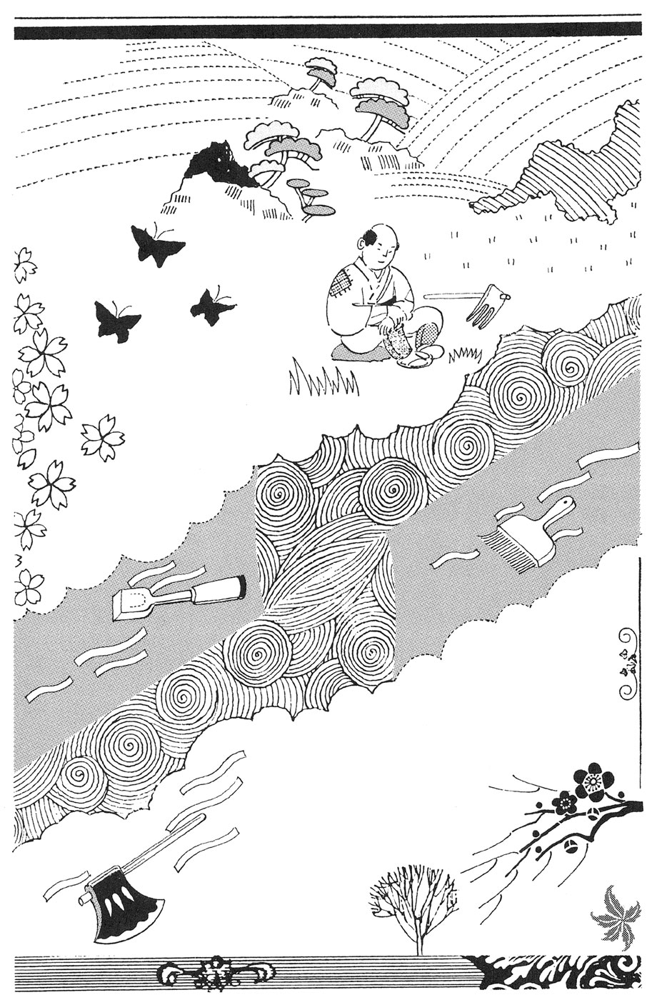
そんなことを考えているうちに、下流へと消えていった。拾い上げればよかったと思った時には、手おくれだった。
そのうち、やはり板の上にノコギリののったのが、流れてきた。農業じゃ、使うこともあまりないしな。ナタだったら、マキを作る役に立ったのに。損をしてしまった。
「上流で、順に捨てたのだろうか」
また、なにかが流れてきた。農民は、ひとつぐらいはと、川のなかへ歩いていって、それを手にした。
人の形をした、木の像。高さは、立った時のひざより、少し低い。
仏像なのか、飾りなのかもわからない。家に持ち帰っても、どうしようもない。農民はそれを、川の堤のそばの、自分の畑のはじに置いた。
川のそばから石を運んできて、まわりにつんだ。上に一枚の瓦をのせると、もっともらしいものとなった。
やがて、畑のへりにそって、堤と並ぶように、何本かの木が育ちはじめた。畑の北側なので、日当りを悪くすることもない。
温暖な地方のため、なんの木かわからないが、よく育った。十年もすると、かなりのものとなった。通りがかった人が、それを見て農民に言った。
「いい木ですねえ。一本、売っていただけませんか」
「買い手がつくとはね。なんにお使いになるのですか」
「木彫りの細工品ですよ。簡単なのは、シャモジ。版木だの、お菓子の型を作ることもある。趣味ではじめたので、木魚などは無理です。作って面白いのは、お面ですね。お祭りの時に、人びとが使います」
「そうですか。おついでの時に、お好きなものを、お持ち下さい」
出された代金をもらい、承知した。
ある日、気がついてみると、一本が切られていた。見た人の話によると、朝はやく来てノコギリで切り、川に浮かべて運んでいったそうだ。
どんなノコギリだったのだろう。しかし、昔ここの川を流れていったものの形も、はっきりとは思い出せない。
下流にも、上流にも行ってみたいが、どれぐらい行ったものか見当もつかない。なにかがわかるとの保証もない。こういうことがあった。それでいいだろう。
緑
そこの領内で、ある農民が稲作をつづけていた。桜の花が少し早かった年、稲は青々と育ち、ある一画だけは、秋になっても緑のままだった。
みのったのも緑。脱穀しても緑だった。
村の長へ申し出ると、領主の命令で、農業のお役人が見に来た。
「まことに、珍しい。どういうことか、わからぬ。以前に起ったという記録もない。これはすべて、年貢として納めよ。ほかは、納めなくてよい」
役人はその米を持ち、酒造りを業とする家へ寄って、やってみてくれとたのんだ。
そのうち、出来たとのしらせがあった。行ってみると、緑の酒がそこにあった。
「飲んでみたか」
「まだです。こんなの、はじめてです。どうかなったら、いやですものね」
役人はそれを持って、領主の屋敷へ寄り、報告した。説明の、しようもない。緑色で、美しく澄んでいる。
領主の母、奥方、幼児、数名の側近たちも、近よって眺めた。持ち帰った役人に、領主が言った。
「ためしに、飲んでみろ」
「このような貴重なものは、まず、お殿さまから」
「かまわぬ。少し飲んでみろ」
命じられては、ことわれない。茶碗につがれたのを見ていると、引き込まれるような気分になり、一気に飲んだ。
体内で、なにかが進行しているようだ。目が一瞬、緑色に光った。
変化があった。さっきまで平伏していた役人は立ちあがり、あっというまに殿の首をはねた。大声で鋭く叫ぶ。
「わたしが領主だ。わたしこそが、まことの領主だ。この見苦しい死体は、始末しろ」
いあわせた者は、だれもさわがず、男たちはその指示に従った。
「残った酒は、みなで味わえ」
飲んだほかの人たちには、べつに変化はなかった。さっきまでの領主と同じに、殿さまとしてうやまった。
母は母であり、奥方は奥方、子の幼児もそうだし、側近は側近だった。
たまたま、寺の住職が来ていて、この事件を物かげから見た。帰っても、夢を見たような気分だった。翌日になっても、数日たっても、領内にこれといったことはなかった。隣国とも、いざこざは起らない。
住職は立場を利用し、あの役人の系図を調べてみた。五代前にさかのぼると、不明になっている。その時代は、領主のほうも不明なのだ。ほかに、調べようがない。
そのころ、家臣のだれかが領主を毒殺して、支配者となった。幼い遺児を、だれかに育てさせ、家臣にしたということは......。
つじつまを、無理に合わせることはない。あれは幻覚だったのかもしれない。たしかに目にしたように思うのだが。とにかく、妙な酒なのだ。
そして、つぶやく。
「ああいうのも、どこかで起る現象のひとつなのだろう。なぜかなど、背後の理屈など、くわしいことは知りようがない。太陽も満月も、不意に欠けることがある。星だって流れる。み仏の力もだ」
学があるだけに、言うこともむずかしい。それから住職は、毎年その日になると、本堂で、とくに入念にお経をとなえるのを習慣とした。なんのためか、自分でもわからないが。
雪
木こりを仕事とする男がいた。山から、たきぎを運んでくる。また、炭をも作った。そこは雪国なので、炭もよく売れるのだ。
ある朝、そとへ出て、屋根の雪をおろしながら、むこうを眺めて、首をかしげた。
川のふちから、山のほうに、点々となにかがつづいている。足あとのようだ。どういうことなのだろう。山のこととなると、いくらか気になる。
防寒用の身ごしらえをして、調べに出かけることにした。近よってみると、たしかに足あとだ。
人間の足あとだ。指のあとまで、はっきり見わけられる。ということは、雪の上を、はだしで歩いていったやつがいたわけだ。なんのために、どこへ。
山のほうに、つづいている。こんなのは、これまで見たことがない。川まで行ってみたが、そこに手がかりになるようなものは、なかった。
山へむかうことにする。
「けものの足あとなら、まだわかる。話に聞く河童なら、水かきのあとがあるはずだ。わけがわからん」
いつのまにか、斜面をのぼっていた。この寒いのに、どういうつもりだ。足あとは、少し大きくなっているようだ。気のせいだろうか。
さらに進むと、もっと大きくなっていた。日光に照らされて、とけて大きくなったせいかな。最初に見た時、ずっと遠くまでつづいていたのは、そのためか。しかし、形はわりと、はっきりしている。
好奇心にかられ、さらに登る。大きくなっている。立ちどまって、自分の足あととくらべてみる。長さもはばも、二倍になっている。川のそばでは、普通だったのに。
「なんだ、これは......」
想像もつかないことだが、現実に起った。にわかに、恐怖がこみあげてきた。思わず、大声をあげる。
「やめてくれ」
そのとたん、なだれが発生した。男はそれに巻きこまれ、あがいた。驚きのなかで、夢中で手足を動かす。
周囲の動きがおさまり、息がつけるようになっても、疲れでしばらくじっとしていた。とんでもない目に、会ってしまったな。
雪から抜け出し、立ち上ってみると、ふしぎだった。さっき、足あとを追いかけはじめた場所に、戻っていたのだ。
つまり、山への足あとは、もう残っていない。
「だれも、信じてはくれないだろうな」
はたして、そうだった。雪の季節なので、おたがい訪問しあって、話して時間をつぶすことが多い。珍しい体験なのだが、にやにや笑いをされるだけ。
木こりの男は言った。
「天狗さまじゃないかな」
「さあ、山にむかうにつれて、足が大きくなるとはね。あまり、聞いたことがないな」
相手になってくれたのが、ひとりだけあった。農家の主人で、うなずいてくれた。
「おかしな話だが、ありえないとも思えない。信じたいね。おまえに、こんな話が作れるはずがないものな」
「そうですよ。ほかにも、なにかわけがあるのですか」
「春に、うちのおやじが死んだろう。たまたま、旅のお坊さんが道をたずねに寄って、お経をあげてくれた。お礼にと、甘酒をひょうたんにつめて、さしあげた。おやじの好物だったので、お供えした品だ。幼い娘には少ししか与えられず、気の毒だったが」
「それが、どうして」
「その旅僧の歩いていったのが、その足あとの方角だったのでね。道を教えたのだから、おぼえている」
春になり、雪が消えると、農家の主人は、木こりがなだれで戻された場所をたしかめ、梨の種を埋めた。僧がくれたもので、その畑も彼のもの。
やがて、一本の木が育ち、何年かすると果実がなった。木こりを呼んで、いっしょに食べると、いい味だ。甘いが、さっぱりとしている。
「こりゃあ、盗まれるな」
しかし、だれも盗まなかった。ふしぎに思ったが、ほかの人は食べても、なんの味も感じないらしい。その農家の家族と、木こりの男に限るらしい。
「あの、なだれの時、お坊さんが、どこかで死んだのかな」
農家の主人がつぶやくと、木こりは言った。
「そう思いたいでしょうね。わたしは、山はふしぎだと言うしかありませんが」
鳥
べつな土地の、べつな木こりの話。山菜だの、珍しい花にもくわしい。渓流でイワナを取るのもうまい。山の自然を、よく見ていた。
「ホトトギスだの、カッコウだの、鳴き声はきれいだが、よくない鳥だな。ウグイスだのヒバリだのの巣に、卵をうむ。育ててもらうだけならまだしも、早くかえったそのヒナが、ほかの卵を捨ててしまうのだから」
セキレイ、ツグミなども、同様な被害を受ける。
「なんでああなっているのか、わけがわからない。山のなかには、人間の考えるのとちがうきまりが、たくさんある」
そこで、ウグイスの巣があると、ついのぞいてしまう。
ある時、一匹のリスを見かけた。木に登り、ホトトギスの卵を下に落し、割れたのを食べてしまった。
「ああいうことも、あるのだな」
このリス、あるいはこのリスの一族は、それをやっているらしい。この一帯ではウグイスが多く、どれもみごとに鳴く。
その木こりは、また驚いた。リスがウグイスの鳴き声にあわせて、踊るのだ。リスは小さく、動きが早く、なぜかウグイスの声に合う。
リスは冬のあいだ、貯蔵しておいた木の実を食べるが、キノコの干したのも食べる。木こりが巣をさがしてのぞくと、いくらか残っていた。
豆をかわりに入れ、そのキノコを少しもらって帰った。ショウチュウにつけてみた。
夏まつりの夕方、木こりはその酒を飲んで、神社での踊りに加わった。気がつくと、朝になっていて、自分はそこに横たわっていた。眠ってしまったらしい。
「疲れたなあ」
通りがかった女の人が言う。
「よく踊ったわね。あんな面白い踊り、はじめて。みんな、大喜びだったわ」
「おぼえてないな。すると、あのキノコのせいかな。リスの巣にあったものだよ。どこのリスでもとは、いかないらしいが」
すると、女が先に言ってしまった。
「よくわかんないけど、山には、なぞめいたことが多いのね」
光
その領主の支配は、山脈までだった。つまり、その山脈が隣国との境ということになっていたのだ。
ある日の夕方、屋敷のなかの領主は、あたりがさわがしいので、側近の者に聞いた。
「なにごとか」
ひとりがそとへ出て、戻って言った。
「山の上で、なにかが起っています。ご自分で、ごらん下さい」
領主が物見台へあがって眺めると、山脈のひときわ高い頂上が、赤く光っている。白っぽい煙も、立ちのぼっている。光を受け、下のほうは赤い煙に見える。
「あれは、噴火だろうか。火山だという話は聞いたことがないし、本物の噴火というものを見たことはないが」
「わかりませんな。たき火とも思えませんし、それをやる必要もない。奇妙なことです」
「あしたになったら、調べに行こう。警備の者を配置し、領民たちが勝手に登らないようにしておけ。もっとも、夜に山へ入る者もいないだろうが」
つぎの日になって、領主は数名の部下を連れて、山の頂上をめざした。けっこう疲れるが、好奇心はそれを上まわる。
やっとたどりついて、領主が言う。
「なんということもないな。あたりの草が、なにかに押されたように倒れているのが変だが、それだけだ」
ひとりが、声をあげた。
「あれが、なくなっています。あの、お地蔵さまですよ。あんな重いもの、簡単に運べるわけがないのに。ころがり落ちたか、引きずりおろしたようなあともない」
「そういえばだ。昔から大きな石が、ここにあった。鉄分が含まれているので、重いのだとの話も聞いたことがある。あれは......」
「十年前になりましょう」
「石の細工をする人が、都から旅をしてきた。なにか仕事をというので、地蔵さまの形に仕上げさせた」
「品のいい人でしたね。なにかしくじって追い出されたのかもしれませんが、名の知れた職人なのでしょうか」
「その地蔵が消えるとは、どういうことだ。だれか、むこうへおりて、ようすを聞いてきてくれ」
領主は引きあげた。やがて、隣国から戻った者が報告した。
「だれも、なんにも見なかったそうです。むこうからだと、夕日と重なったためでしょうか。役人に、怒られましたよ。光だの、噴火だの、地蔵さまが消えただの、人をまどわすことを言いふらす。なにか、たくらんでいるのだろうと」
「やっかいなことに、なりそうだな」
「将兵を集め、準備にとりかかりましたよ。このへんで、みなの気を引きしめたいらしい。こちらは、お山の変事で、浮き足だっている。いい時機と思ってでしょうね」
数日たつと、隣国の軍は、山脈の低くなっている関所を攻め、進んでくる。領主は言った。
「あきらめるか。普通ならあの峠に兵を集めれば、防げる。そこを破られたとあっては、勝ち目がない。ここの領民たち、迷信ぶかいところがある。山の光のあととなると、協力してくれそうにない」
領主は、家族と数人の部下を連れ、蔵のなかの価値のある物を持って、屋敷を出た。へたに戦うより、賢明だったかもしれない。
逃亡の旅も、どこへという目標があるわけではない。侵入者も領地を手に入れれば、あくまで追ってくることもないだろう。
部下のひとりが、指さして言った。
「あ、あの地蔵さまを、ごらんなさい。山の上にあったのと、そっくりだ。逃げても、きりがない。このへんで、茶店でもやって、新しい生活をはじめましょう」
「それもそうだ」
街道ぞいなので、ここの領主の許しを得なければならない。持参した品を献上すると、ききめがあった。
地蔵のせわをしながら、茶店をやりたいとは、けっこうなことだ。そんな地蔵があったとは、知らなかった。農地にむかない場所なので、営業してよい。
店は、いくらかの利益をあげた。
水を求めて井戸を掘ったら、温泉が出た。水は、川から引いてくることにした。湯治場の条件がそろう。
疫病がはやった時も、ここの湯に入り、お地蔵さまをなでると、無事でいられる。そんなうわさで、遠くからのお客もふえた。
その温泉地は、いまも栄えている。そこの最も古い旅館のあとつぎは、代々いい人で、有力者。しかし、議員に出ようという気になった人はいない。
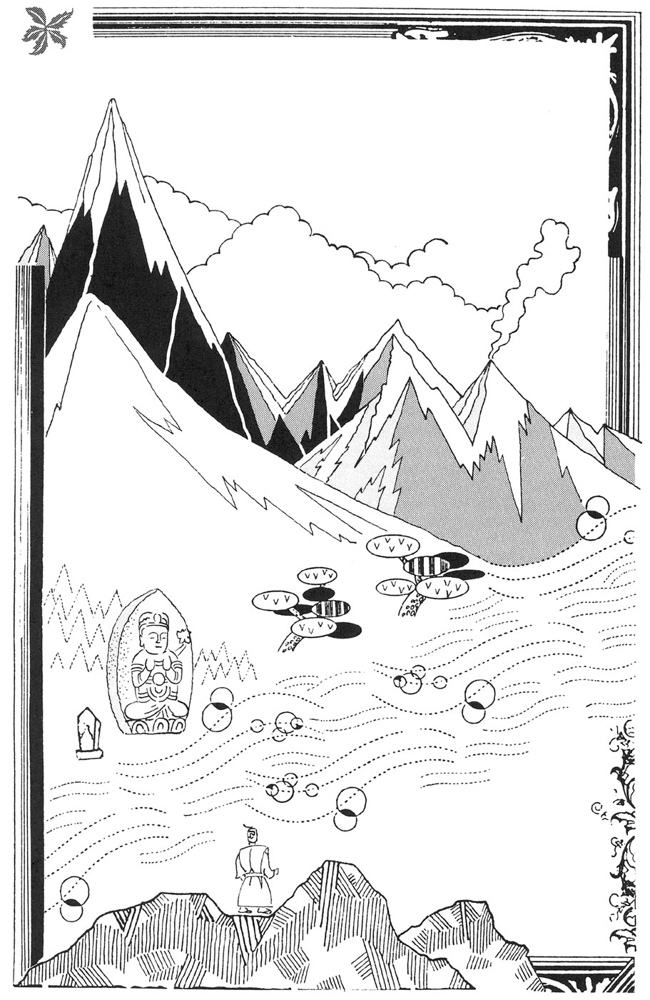
海
海岸ぞいに、漁業をする家族が住んでいた。小さな舟を出し、魚を釣る。その日は、タコもつかまえた。
タコはすぐ食べなくてもと、桶に入れてフタをし、台所のすみにおいておいた。
つぎの日、野菜がへっている。イモやゴボウなど、料理してないものだし、外部から人の入ったあともない。主人が言った。
「タコが食ったのではないか。夜に陸に上って、畑のナスを食べるという話を、聞いたことがある。ほかに考えようがない」
ためしにと、麦飯や豆の煮たのを与えてみた。タコは喜んで食べた。こまかな揺れが、喜んでいるような印象を感じさせる。
貴重だが、ゆでたタマゴもやってみた。それも食べたし、大根、菜っ葉も。ほかに娯楽のない時代であり、一軒家の暮しなので、ひとつの面白さだった。
大きくはならなかったが、タコの皮膚が乾いてきた。ガマの油を少しぬったら、いい気分のようだった。
酒を飲ませると、妙な踊りのあと、だらしなく眠った。そんなことのあと、毛がはえてきた。野ウサギのように、うす茶色。なでると、いい手ざわり。
海へ出ても、タコをつかまえる気にならなくなる。そのかわり、普通の魚は、よく釣れるようになった。食事の時、タコにもわけてやる。いまでいうペットであり、マスコットでもある。
話を聞き伝え、見物に来る人もいる。想像してたようなグロテスクさはなく、かわいらしいし、動作も面白い。楽しんだお礼にと、なにか置いてゆく人もあり、知人がふえた。
そんな日々がつづく。べつに変事も悪事も、起らなかった。なごやかな生活なら、それでいいではないか。
いや、長い目で見て、いいことをもたらしたといえる。タコをつかまえて飼った主人は、それから六十年、百歳ちかくまで生きた。元気もあり、頭もはっきりしていた。
かぜをこじらせ、主人が死んだ日、タコは悲しそうなようすで、海へ帰っていった。そのあと、その姿を見た者はいない。
あまりに長寿だったので、昔の話を否定できる人は、残っていなかった。あれは本当にタコだったのか。
竹
ある地方に軍勢が攻め込み、主だった人たちを殺した。新しく支配者になった男は、考えた上で言った。
「ずっとこの地の領主だった者の息子、ごく幼く、かわいらしいとの評判だ。それまで殺すと、わたしは悪党にされ、今後がやりにくくなる。丘のむこうに小屋を作り、乳母をひとりつけて、とじこめておけ。飼い殺しというわけだ」
それが、なされた。丘の上から見張りやすく、よそへ逃げにくい場所なのだ。
二年ほどすると、小屋を遠巻きにするように、竹が生えた。生長し、竹の生垣のようになった。監視の目がさえぎられる。食料をとどける役目の農民に、見張りが聞く。
それへの答え。
「いい竹ですね。梅雨の時も、すがすがしい。夏にむかいますが、涼しくしてくれそうだ。冬は北風を防いで、暖いでしょう」
竹の生垣は、そのはばが太くなった。農民の話だと、ますます住みごこちはよくなっている。竹の作用か、時の流れがちがうのか、若さまはいい青年になったとのこと。
支配者は命じた。
「もう青年とは、要警戒だな。武芸の達人になっていると、やっかいだ。女をひとり、さしむけよう」
腰元のきれいなのをひとり、送り込んだ。おかしな動きがあったら、すぐ報告するようにと言いふくめて。
その女は、竹の林に入ったきり、戻ってこなかった。農民に聞くと、心配はないとの答えばかり。支配者は、腕のたつ部下に言った。
「おまえ、竹のなかの家へ行って、ようすを見てこい。なにか陰謀が進んでいるようだったら、処分してこい。同情は不要だ」
しかし、その男も戻ってこない。農民の話だと、男はおだやかな表情になり、若さまに仕えているという。
どうしたものか。支配者は方法をきめかねた。相談するとなると、あの農民ぐらいしかない。呼び出して聞いてみる。
「竹林のなかは、どうなっている」
「このところ、行っていないのです。食料は、もう運んでこなくていい。なんとかなる。おまえまで帰れなくなっては、気の毒だ。そう言われましたのでね」
「妙なことだな」
「ご心配いりませんよ。べつに、そとにむけての害はないのです。あのままで、いいのではありませんか」
やがて、支配者は戦いに出て、死んだ。そのあとの権力者は、竹に無関心。
竹林はそのまま。そとへひろがることはない。ふえているとすれば、内側にむかってだ。びっしりなので、ほかの地へつながる通路があるのかどうか、見当もつかない。
あの農民も、としをとり、病気も重くなった。先が長くないのならと、杖にすがって、竹林に入っていった。そして、そのまま。
鏡
山奥に、貧しい村があった。そこへ行く道も歩きにくいので、行商人が年に何回か訪れるだけ。
べつにもうけもないが、一種の同情で行くようなものだ。たまに、大きくて丸い栗の実といったものが、手に入る。世の中には、変った物を食べると長生きできると信じている金持ちもいるので、損ばかりではない。
その村の、一軒の家に少女がいた。畑や林で働くので、哀れな姿。しかし、顔つきは美しいようだった。
「きれいな娘になるだろうな」
みなが、そう言う。しかし、貧しいので鏡がなかった。あったとしても、金属面をわざわざ磨く手間も惜しい。
水にうつそうにも、小川では水面が乱れ、水を入れる大きな容器もない。なにかにうつせたとしても、化粧していなければ、さほどに感じなかったろう。ここでは労働力や器用さのほうが、価値を持っていた。
しかし、行商人たちは、それをみとめた。たまに出かける二人の男が、話しあった。
「村のあの子は、美人だな」
「めったにいない。よごれを落し、いい着物で飾ればね」
うわさは領主の耳に入り、連れてくるよう依頼された。
「そのための金は、用意した。両親に承知してもらい、当人のなっとくも得た上でな。この屋敷で働いてもらいたいのだ。無理にでは、あとがやりにくい」
二人の行商人は、村へ出かけ、交渉した。領主の話だから、でたらめではないだろう。この二人は、何回も来ている。信用していい。娘も行ってみたいという。
そして、領主のいる町まで来た。商人たちは、娘をお湯に入らせ、髪結いに化粧を手伝わせ、美しい着物をまとわせた。
「考えていた以上だ。まさに、はじめて見る美しさだ」
上等の鏡を渡すと、娘はのぞき込み、うれしそうだった。三日ほど、初歩的な礼儀作法を教え、領主の屋敷へ連れていった。
「いかがでしょう」
領主は、うなずいた。
「大声で叫びたいね。領内でとれた最高の宝だと。仕えてもらいたいが、まずは生活になれてもらわねばならない。なにもしなくていい。しばらく、ここで......」
というわけで、屋敷のなかで一室を与えられ、上等な食事も出された。ほかの人たちとつきあい、落ち着いた気分になってもらいたい。つまらぬ意地悪をしないよう、注意してある。
怒られるのを覚悟で、いじめたりする者はいなかった。また、いじめようもなかった。部屋から出たがらないのだ。鏡をのぞきつづけ、領主が近よって声をかけると、頭を下げるだけ。
ようすを見に商人が訪れたが、戻って仲間に、こう話した。
「どうも、ぐあいがおかしい。あいさつしても、返事がいいかげん。鏡に魂を吸い取られつつあるといっていい」
「日に当ることも、ないらしいしね。屋敷の世話役の話だと、運動しないせいか、少しふとり、活気がなくなり、顔にしまりがなくなったとか。急に生活を変えすぎた。村に帰すのがいいのだろうが、その気になるまい」
やがて、領主も関心が薄れた。商人たちを呼んで言った。
「うまく、いかないようだ。生きている、お人形だ。礼はする。村に帰すが、なにか方法を考えてくれ」
娘は屋敷から出された。それからのことは、よくわからない。
村に戻りたくなければ、言う通りにしろと、商人のひとりが自分の妻にしてしまったともいう。着物は売り払い、髪結いにも行かせず、化粧もさせない。鏡も近くには置いてない。少し、もとの気分にかえった。
子供がうまれる。子育てに熱中し、しあわせな人生をすごしたという。といっても、妻の美しさを他人に自慢できない亭主は、そう楽しいものではなかったろう。友人の商人も、うらやむより同情したかもしれない。
どこかに、ありそうな話ではないか。
筒
太い竹の筒が、海岸に流れついた。竹は青々としているが、長いあいだ海にあったためか、貝殻がついている。珍しい品と思い、拾った人は村の長にとどけた。
ここは漁村で、人もかなり住んでいる。いい漁場のそばなので、保存食を作るのを仕事とする家もある。ヒモノ、スルメ、シオカラ、カツオブシ、タタミイワシ。
竹の筒は、用途がわからない。のぞけば、むこうが見える。村長は口に当てて、声を出した。
「これは、なんだ」
反対側から出たのは、べつな言葉。
「フリラ、パキニ」
声も変っている。ほかの言葉をしゃべったが、やはり、わけのわからないものに変る。
「これじゃあ、子供のオモチャだな。だれか、やってみるか」
「妙な品だけど、それだけのことなら、やるまでもない。子供だって、すぐにあきるでしょう。一度ぐらいは、遊びたがるかな。ここの家においといて下さい。子供を連れた者が、寄るかもしれない」
作用と存在場所がわかっていれば、それでいい。やがて、そのことも忘れられかけた。
ある日のこと、どこかの家の子供が、妙なことを口にした。
「クカロレン、ソラキバツ」
頭がおかしくなったのかと、その女の子を連れ、母親が村長の家へ相談に来た。
「どうしたものでしょう。手当ては......」
村長は考え、思い出して、いつかの竹の筒を出した。
「これに口をつけて、それを言わせてみてくれ。むだとわかったら、まじない師のところへ行ってみろ。コバンザメの霊に、とりつかれたのかもしれない」
子供はそれをやった。筒の一方からは、人間の声が出た。
「あすの夜、大津波」
「そういう力をそなえた筒だったのか。聞いたろう。みなに知らせよう。舟も流されないよう、縄でつなぎ、加工の仕事の人は、原料を高台に運ぶのだ」
「津波が来るのですか」
「だめで、もともとだ。なんだか、来そうな気がするな。被害が少なくてすめば、それに越したことはない」
つぎの日の夜、全員が山へ避難した。たまには、たき火を囲んで、みなで話し合って時をすごすのも、いいものだ。酒を飲んで、歌う者も出た。
やがて、音をたてて、大きな津波が押し寄せてきた。大変な波だが、すぐにおさまり、朝まで二度と起らなかった。
「もう大丈夫だろう。おかげで、命びろいした。あんな波とはね」
なかには、舟のこわれたのもあり、家が傾いたのもあった。しかし、大津波にやられたとの報告で、領主は上納金を、数年間なしにしてくれた。損害をおぎなって、かなりあまった。
困った立場になったのは、まじない師。この大災害を、予知できなかったのだ。からかわれる。
「おまえに、お告げはなかったらしいな」
「転業だね。しかし、自分の未来を見とおす力を、さずかったようだ」
貝を海草と煮て、濃い味をつける。つくだ煮の元祖のようなものだが、評判の品となり、財をなした。
竹の筒は、ネズミか犬がくわえていったのか、いつのまにかなくなった。しかし、妙なことを変な声で叫ぶ子供が出ると、避難する習慣がつき、津波で死ぬ人は出なくなった。
たちの悪い子が、人さわがせをやろうとしても、どこか響きがちがうのだ。
水
その、くぼ地にある村は、ある年、雨がまったく降らず、困っていた。たまたま通りかかった、旅の行者にたのんでみた。
「雨ごいを、やっていただけませんか」
「そんなに、ひどいのか」
「もともと豊かでなく、これといった作物もない。雨が降らなければ、うえて死ぬ者も出るでしょう」
聞いて、行者はもっともらしく言った。
「気の毒なことだ。あの寺のなかで、雨ごいをしてあげる。しかし、その夜は、だれも近づけるな。ききめがなくなるし、秘法なのでな」
「わかりました。よろしく、お願いします」
つぎの朝になってみると、行者がいないばかりか、寺の本尊の仏像までなくなっていた。追っても、手おくれだろう。
「とんでもないやつだ。だまされた。どうも、いやなことになりそうだ」
黒い、人の形をした雲が山のむこうから現れ、空にひろがり、大雨となった。洪水になりかけたが、その寸前にやんでくれた。
いちおう、雨は降ったわけだ。
その次の年、日照りつづきで困ることはなかった。むしろ、普通の年より、いくらか雨の量が多くなったようだった。
その傾向は年ごとにつづき、水たまりが各所にふえていった。一方、農地がへってゆく。
ある農家は、考えたあげく、ドジョウの幼魚を仕入れてきて、水たまりに放ってみた。それは成長し、食料になった。ふやせば、売って利益が出るかもしれない。
それを見て、フナや金魚を、池のような水たまりで飼う人も出た。鯉をためす人もいた。これだと、大きくするのに時がかかるが。
水たまりもふえつづけ、農地のほとんどは、湖となってつながった。しかし、徐々にであり、対策を進める余裕を持てた。ワカサギ、ヒメマスも生育させた。
人びとは、水ぞいの場所で生活するようになった。水面も、ある高さで止まった。丘をけずったので、そこから、むこう側の川に流れてゆく。
浅いところでは、味のいい藻がとれた。魚は蛋白質だから、からだにいい。もはや、特色のない貧しい村ではなくなった。主食や野菜は、買えばいいのだ。
だれも満足だったが、いつまでもつづいてほしいなと、強く思った。湖水のそばに神社を建て、弁天さまを祀った。その役目は、かつての寺の住職がやった。責任を感じているので、それは熱心だ。ずっと栄えてゆくだろう。
行者がどうなったのかは、わからない。どこかの川で、おぼれたのではないかな。
夜
大きな町の、一軒の商家。夜、そこの主人が寝ようとすると、そばにキツネがいた。
「なんで、ここに現れた。化かすつもりか。退屈だから、少しだけ化かされてみるとするか。話のたねになる」
「いえいえ、そんなことはしません」
「どうやって、ここへ入ってきた」
「ネコを飼っている家は、簡単なものですよ。それと思って気にとめない」
「さて、どう化かすのかな」
主人がつぶやくと、キツネが言った。
「化かす、化かすなんて、おっしゃらないで下さいよ。もともと、まともな動物なんです」
「では、なんのために来た」
「順を追って、お話ししましょう。かなり昔、この店で熊吉という男が働いていた」
「そうだった。二十歳ぐらいの、役に立つ男だった。しかし、金を持ち出し、いなくなってしまった。信用したわたしも、うかつだった。いま、どうしているかな」
「見つかれば、連れ戻され、罰を受ける。逃げつづけです。だれかが、見かけましたと、ここへ知らせるかもしれない。しかし、食わなくてはならない。金はまもなくなくなり、行商です。しかし、扱う品もきまっていない。ある土地で名産を仕入れ、ほかの土地で売る。運び代で、食いつなぐ」
「大変だろうな。気候のいい時期なら、面白いかもしれないが」
「疲れても、休めません。あれから、何年になりますかな。疲れと病気とが重なって、道ばたで横になっていた。そこで、わたしが声をかけたのです」
「もの好きなキツネだな」
「親切なキツネと、呼んで下さいよ。すると、熊吉さんが、これまでのことを話してくれたのです。そして、死ぬ前に、昔の主人におわびしたいと」
「そうか」
「それを引き受けましょうと言うと、酒をくれました。うまい酒を仕入れて、運ぶ途中だったのです。天秤棒の使い方が、上手でない。徳利を持ってきたら、入れてくれました。わたしがうかがったのは、そのためです」
「そうだったのか。ごくろうだった。礼を言う」
「では、帰って、あの酒を飲むとしますかな。先に飲んだら、来る気になれなかったかもしれない。それでは」
「待ちなさい。じつに、いい気持ちだ。熊吉をにくむ心も消えた。これをあげる」
いくらかの銭を出すと、キツネは受けとった。
「これはこれは。熊吉さん、どうなったかな。お言葉を伝えられれば、喜ぶでしょうね。そう遠くない村なのです。気が弱くなって、足がこっちへむいたのでしょう。わたしだって、野越え、山越えではね」
キツネは、ネコのように去っていった。
主人は次の日から、会う人ごとに、これを話題にした。感心する人が多い。
「いい話ですね。熊吉さんもだが、そのキツネも立派なものです。お稲荷さんのそばに、巣があるのでしょうね」
しかし、なかには、こう言う人もいる。
「やはり、化かされたのじゃないかな。銭の額はしれてますが、あなたが大まじめに、話してまわっている。そこですよ。キツネがちゃんと口をきくなど、おとぎ話のなかだけですよ。しかも、筋の通った会話をし、酒が好きだなんて、聞いたことがない」
寺
小さな寺があった。
ある夜、どこからともなく現れた火の玉が、あたりを飛び、井戸のなかに消えた。瓜などの畑荒しを防ぐため、番をしていた者が、それを見た。
火の玉は、出てこなかった。朝になり、こわごわのぞき込んだが、なにもない。
しかし、気のせいか、お経をあげるような声が、底から小さく聞こえてくる。男は住職に話した。
「どういうことでしょう」
「わからんな。これは、お墓を洗うための井戸。飲食用には、建物のそばの、屋根のある井戸を使っている。だから、わたしは、どうってこともない。しかし、変なうわさも困るから、だまっていてくれ」
そう言われれば、かえって話したくなる。家族だけに注意したが、たちまち、あたりにひろまった。
先祖の墓まいりに来た者も、墓石にかけるのならいいだろうと、その水を使った。すると、その夜、先祖が夢に出てきて、礼を言った。
よい評判となり、遠くから、水をもらいに来る人もあった。供えた花も、長持ちする。
お金を投げ入れてゆく人もある。住職はそれを見て、残念がる。寺の収入だが、拾いに入らせようにも、やる人はいないだろう。
となりの村に、五作という農家の主がいた。死んだ父から、普通より広い田畑を受けついだが、墓まいりをしない。
その妻は気になり、この寺へ来て水をもらい、持ち帰った。これで墓参に行くよう、すすめるつもりだった。
目を離したあいだに、八歳の息子が、その水を少し飲んでしまった。どうなるかと、妻は青ざめる。そこへ主人が帰ってきた。息子が、大きな声で言った。
「おい、五作。たまには、墓まいりに来い。よそより楽に暮せるのは、だれのおかげか、わかっているのか」
つぎの日。墓へ出かけ、きれいに洗い、その水をかけ、花を供えた。息子も、変なことは言わなくなった。ああ叫んだことも、頭に残っていないらしい。
空
高い空を、一羽の鶴が舞っていた。美しいし、とくに珍しいことではない。
しかし、突然、飛ぶのをやめ、まっさかさまに地面をめざした。翼をからだに密着させ、口ばしを先に、足をのばし、矢のようだった。
このようにして水中の魚をとる鳥もあるが、鶴はやらない。また、下は水面ではない。
そして、田の中に落下した。見ていた人たちが集ってきた時には、田に首の途中までささった形で、死んでいた。
調べてみたが、傷のあともない。病気としても、ゆっくりはばたいて落ちるとか、ほかに飛び方があるだろう。みなで、話し合う。
「変った鶴だ。急に死ぬ気になったのか。聞きようもないしな」
「空には、目に見えぬ力が秘められているのではないかな。その怒りに触れたのか」
「わけはわからないが、意味ありげだ。ここに埋めてやるか」
「それは困るよ。わたしの田だ。そこの、街道のそばあたりがいいだろう」
埋めるための穴を掘ると、いくらかの銭が出てきた。旅人の落したのが、埋まったのだろう。
「奇妙だ。なにかの縁だろう。お寺の坊さんを呼んで、お経をあげてもらおう。こういう金で、飲み食いすると、ろくなことがない」
埋葬がなされ、その上に松の苗を植えた。
「お経をあげてもらった鶴など、ほかにいないだろう」
「こんな死に方をしたのもな」
年月がたち、松は育ち、枝ぶりがよくなった。眺めると、翼をひろげた鶴のよう。旅人は、足をとめて見物する。
身分の高い者が通ることもある。感嘆し、村の者に言う。
「鶴の形をした松。めでたい限りだ。お祭りなど、やらないのか。有名になるぞ」
「はあ」
もっともらしい話を作れば、ありがたい土地と評判になるだろう。しかし、事情を知っていると、その気になれたものじゃない。まして、景気よく鶴おどりをやるなど......。
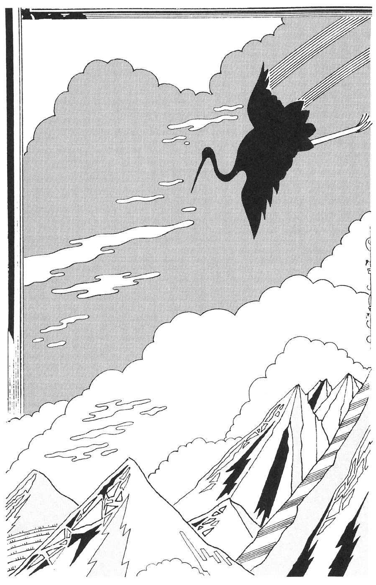
話
そりゃあ、ほかにも説明のしようはあるけどね。
こんなことを私は信じないのだが、二月九日の夜、なにかが私に乗り移った。これらの話が、三時間半ほどのあいだに、頭のなかに語られた。内部から湧くという感じではない。はじめての体験だから、乗り移られたと断言はしない。
作家生活は長いが、苦しまずにアイデアがひらめくなど、年に一作あるかないかだ。この十四枚のメモは、つぎの日になっても、書斎の机の上に残っていた。
順序は、そのまま。私なりの文章になったのは、いたしかたあるまい。そういえば、話として伝わってきたので、文章としてではない。
記録されてない民話を、浮遊霊が私にささやいたのだろうか。人を見る目があったな。風俗、ノンフィクション、スパイ物の作家だったら、書いてはくれなかったろう。
出来あがりがお気に召したら、また来てくれるかな。あまり仲よくなるのも、考えものかな。じつはね、物故作家の遺作って、ほとんどそれなのかも......。
なお、類似の話をすでにお読みのかたは、書名、題名をあげ、この出版社あてに、お手紙を下さい。
あとがき
日本の空想的な物語、ＳＦも含まれるわけだが、その発生と普及は、ＵＦＯと関連していたようだ。つまり、空飛ぶ円盤である。
その記事がはじめて新聞にのったのは、昭和二十年の、戦争が終ってまもなくだったと思う。小さなスペースだったが、こんなことが報道されるのかと、驚きと奇妙さを充分に味あわされた。
アメリカでの目撃例が最初だったが、日本製の風船爆弾を見あやまったのではないか。常磐線の水戸の近くから飛ばされていた。当時は車両の窓を閉めさせられた。
そこではなかば公然だったが、戦時中のため、報道されることはなかった。高空の気流により、アメリカへととどく。日本人の発明として、じつにユニークだった。
ＳＦの発想に通じるものがある。宇宙人の乗り物と思えば、夢がひろがる。ＵＦＯは未確認飛行物体の略だが、空飛ぶ円盤となると、親近感のある語感だ。
それへの否定論は、ほとんどなかった。日本は不敗との神話が崩れ、核兵器の力を示されてすぐの時だ。なにが起るかわからないし、宇宙人の説は楽しい。
そんなこともあって、ＳＦの育つ条件ができていった。時代の流れもあったが、ＳＦには絶好の形だった。
私が人生をふりかえってみて、それを、つくづく感じる。ほかの分野でなにかをやったとしても、これほどの満足感はなかっただろう。
ショートショートを書きつづけてきて、その作り方がわかってきた。第一に、それが好きであること。すぐにあきらめるようでは、どの分野でも、つづかない。
着想の大切さはいうまでもないが、さらに重要なのは、ストーリーの組立てである。着想の効果を最大限にするのは、ストーリーによる。構成づくりになれれば、着想も生れやすい。ひとつの思いつきだけでは、読んで面白いものではない。
どうすれば身につくか。多くの作品を読み、筋を要約して頭に入れる以外にない。一編を読んだあと、その作業をする。楽ではないが、いいと思った話なら、やりがいもあるだろう。
好き、着想、ストーリー、この三つは円環状につながっている。ばらばらだったら、大変な苦労を重ねることになる。より面白くするのも、容易である。
もっとくわしく書きたいのだが、きりがない。好きなのが第一で、無意識のなかで、よりよいものへと変形してゆく。
なにか書き忘れたようだが、解明しきれない点のあるのが、魅力のもとなのかもしれない。
なお『お寺の昔話』と『夢20夜』は、どの短編集にも収録していなかったので、今回初めて本書に収録した。
（平成六年五月）
この作品は平成六年七月新潮文庫より刊行された。
電子書籍化に際しては平成二十二年六月発行の第十五刷を底本とし、仕様上の都合により適宜編集を加えた。
つねならぬ話
発 行 ２０１３年11月29日
著 者 星 新一
発行者 佐藤隆信
発行所 株式会社新潮社
〒１６２―８７１１
東京都新宿区矢来町71
URL: http://www.shinchosha.co.jp
© The Hoshi Library 1988